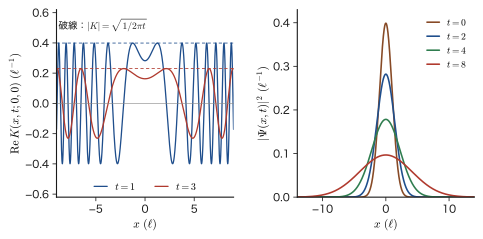
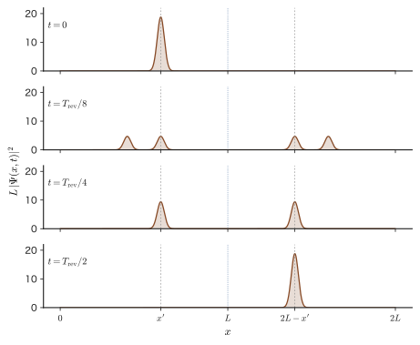
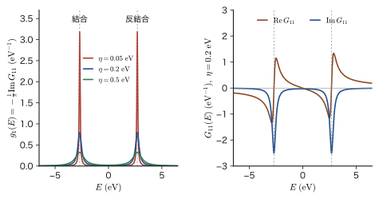
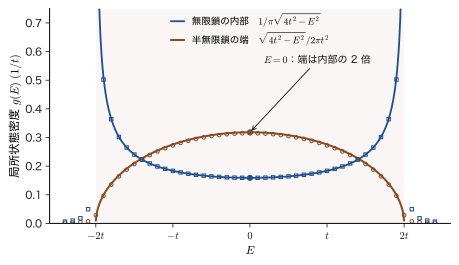
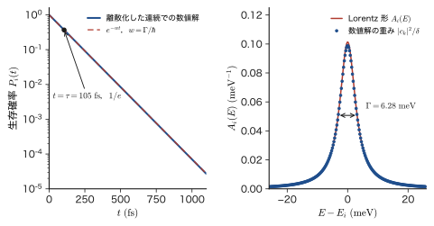

第55章伝搬関数と Green 関数への入口 — 遅延 Green 関数・局所状態密度・寿命
走査トンネル顕微鏡（STM）の像は，試料の何を見ているのか．量子ドットの共鳴準位の幅は，何で決まるのか．励起状態の寿命は，第51章の Fermi の黄金律とどうつながるのか．これらの問いに 1 つの道具で答えるのが Green（グリーン）関数である．本章では，この道具を，前章までに学んだ時間発展から順に組み立てる．
前の章までで，時間を含む Schrödinger（シュレーディンガー）方程式の解は，定常状態の重ね合わせ $\Psi(x,t)=\sum_nA_n\,\psi_n(x)\,e^{-iE_nt/\hbar}$ で書け，重みは時刻 $0$ の波動関数から $A_n=\int\psi_n^*(x')\,\Psi(x',0)\,\dd x'$ と決まることを見た（第49章）．この 2 つの式は，実は 1 つの式にまとめられる．$A_n$ の積分を和の中に入れると，$\Psi(x,t)=\int K(x,t;x',0)\,\Psi(x',0)\,\dd x'$ という形になり，「時刻 $0$ の波動関数に，$K$ という核をかけて積分すると時刻 $t$ の波動関数が得られる」と読める．この核 $K$ が伝搬関数（propagator）である．$K(x,t;x',0)$ は，時刻 $0$ に位置 $x'$ に正確にいた粒子の，時刻 $t$ の波動関数そのものである．Huygens（ホイヘンス）の原理のように，時刻 $0$ の各点から出た波が干渉して時刻 $t$ の波形を作る，という見方を与える．
もう一つの見方が，Green 関数である．古典力学では，減衰振動子に外力 $F(t)$ を加えたときの運動は，「時刻 $t'$ に撃力（$\delta$ 関数の力）を加えたときの応答 $G(t-t')$」を重ね合わせて $x(t)=\int G(t-t')F(t')\,\dd t'$ と書ける（AD 03 第7章 7.3の減衰振動，AD 02 第36章 36.1の定数変化法）．量子力学にも同じ構造があり，伝搬関数に階段関数 $\theta(t)$ をかけて因果律（原因の後にだけ結果が現れる）を組み込んだものが遅延 Green 関数 $K^{\mathrm R}(t)=-\tfrac{i}{\hbar}\theta(t)\,e^{-i\hat{H}t/\hbar}$ である．これを時間で Fourier 変換すると，エネルギーの関数 $\hat{G}(E)=(E-\hat{H}+i\eta)^{-1}$ が得られる．$\hat{H}$ の固有エネルギーは，この関数の極（分母が $0$ になる点）として現れる．
エネルギー表示の Green 関数には，材料科学で直接使える 2 つの量が含まれている．1 つは局所状態密度（local density of states，LDOS）で，$\hat{G}$ の虚部から求まり，走査トンネル顕微鏡（STM）の像の明るさに対応する．もう 1 つは自己エネルギー $\Sigma(E)$ で，その実部は準位のずれ（第V部の 2 次摂動），虚部は準位の寿命を与え，第51章の Fermi の黄金律と完全に一致する．量子ドットや吸着原子の共鳴準位が電極との結合で広がる現象も，ここから説明できる．
本章は，第IX部（時間依存の量子力学）の総括であり，かつ線形応答理論（AD 08）や密度汎関数理論（AD 07）で Green 関数を本格的に使うための土台である．扱うのは 1 粒子の Green 関数までで，電子が多数いる系の Green 関数（場の演算子の相関関数）は，最後の節で「何が同じで何が増えるか」を見通すだけにとどめる．
- 伝搬関数 $K(x,t;x',t')=\sum_n\psi_n(x)\psi_n^*(x')e^{-iE_n(t-t')/\hbar}$ の定義と性質，自由粒子の $K=\sqrt{m/2\pi i\hbar t}\,\exp[im(x-x')^2/2\hbar t]$ と波束の広がり，無限井戸の半周期での鏡像 $K=-\delta(x+x'-2L)$
- 遅延 Green 関数 $K^{\mathrm R}(t)=-\tfrac{i}{\hbar}\theta(t)e^{-i\hat{H}t/\hbar}$ が $(i\hbar\partial_t-\hat{H})K^{\mathrm R}=\delta(t)$ を満たすこと，古典の減衰振動子の Green 関数との対応，因果律と極の位置
- Fourier 変換と収束因子 $\eta$（正の無限小）から $\hat{G}(E)=(E-\hat{H}+i\eta)^{-1}$ を導き，Dirac の恒等式 $1/(x+i\eta)=\mathrm{P}(1/x)-i\pi\delta(x)$ でスペクトル関数・状態密度・局所状態密度 $g(\bm{r},E)=-\tfrac1\pi\mathrm{Im}\,G(\bm{r},\bm{r};E)$ を得ること
- 1 次元自由粒子の $G=-\tfrac{im}{\hbar^2k}e^{ik|x-x'|}$，$\mathrm{H_2}$ 分子の結合・反結合ピーク，半無限鎖の表面 Green 関数 $g_{\mathrm s}(E)=\bigl(E-i\sqrt{4t^2-E^2}\bigr)/2t^2$ と「端の状態密度は内部の 2 倍」
- Dyson 方程式 $\hat{G}=\hat{G}_0+\hat{G}_0\hat{V}\hat{G}$，準位と連続準位の結合の $G_{ii}=1/(E-E_i-\Sigma(E))$，$\mathrm{Im}\,\Sigma=-\pi|V|^2g(E)$ と $\hbar w=-2\,\mathrm{Im}\,\Sigma$（黄金律との一致），$\Gamma=6.28\ \mathrm{meV}$，$\tau=105\ \mathrm{fs}$
- 多体系の Green 関数（Lehmann 表示，Fetter–Walecka の $iG=\langle T[\hat{\psi}\hat{\psi}^\dagger]\rangle$）と本書の規約の対応，AD 08 との符号の違い（$\hat{H}_{\mathrm{ext}}=+f\hat{B}$），第IX部全体の地図
もとにしたノート：本章はノートにない内容を補った章である．関連するノート：望月泰英『物理学ノート 量子力学3』 pp. 69–71（一般解 $\Psi=\sum_nA_n\psi_ne^{-iE_nt/\hbar}$）．
55.1 波動関数の伝搬関数 — 時刻 $0$ の波形から時刻 $t$ の波形へ
55.1.1 展開係数の積分を和の中に入れる
ハミルトニアン $\hat{H}$ は時間によらないとし，その固有関数を $\hat{H}\psi_n=E_n\psi_n$，正規直交 $\int\psi_m^*\psi_n\,\dd x=\delta_{mn}$ とする（固有値が離散的な場合で書く．連続的な場合は，和 $\sum_n$ を積分 $\int\dd n$ に読み替える．55.1.2 節の自由粒子がその例である．状態の番号は，一般の固有状態では $n=0,1,2,\dots$ のどちらから始めてもよいが，箱の中の粒子は第10章どおり $n=1,2,\dots$ である）．第49章で見たとおり，時刻 $t'$ の波動関数 $\Psi(x,t')$ がわかっているとき，時刻 $t\,(>t')$ の波動関数は，定常状態 $\psi_n(x)\,e^{-iE_n(t-t')/\hbar}$ の重ね合わせ
\begin{equation} \Psi(x,t)=\sum_nA_n\,\psi_n(x)\,e^{-iE_n(t-t')/\hbar},\qquad A_n=\int_{-\infty}^{\infty}\psi_n^*(x')\,\Psi(x',t')\,\dd x' \label{eq:55-An} \end{equation}で与えられる（$t=t'$ とおくと $\Psi(x,t')=\sum_nA_n\psi_n(x)$ で，$A_n$ は $\psi_n$ による展開係数である．$A_n$ の式は，この両辺に $\psi_n^*$ をかけて積分し，正規直交性を使えば得られる）．式 \eqref{eq:55-An} の右の式を左の式に代入する．積分変数は，$x$ と紛れないように $x'$ と書いてある．和と積分の順序を入れ替えて（波動関数が十分なめらかなら許される），時刻 $t'$ の波動関数 $\Psi(x',t')$ を積分の外に出さず，$n$ に依存する部分だけを和にまとめると，
$$ \Psi(x,t)=\int_{-\infty}^{\infty}\left[\sum_n\psi_n(x)\,\psi_n^*(x')\,e^{-iE_n(t-t')/\hbar}\right]\Psi(x',t')\,\dd x' $$となる．角括弧の中身は，固有関数と固有値だけで決まり，初期状態 $\Psi(x',t')$ には依らない．これに名前をつける．
定義55.1 伝搬関数（propagator）
$\hat{H}$ の固有関数 $\psi_n$，固有値 $E_n$ に対して，
\begin{equation} K(x,t;x',t')=\sum_n\psi_n(x)\,\psi_n^*(x')\,e^{-iE_n(t-t')/\hbar} \label{eq:55-K} \end{equation}を伝搬関数（または Schrödinger 方程式の核，kernel）という．Dirac 記法では，第50章の時間発展演算子 $\hat{U}_{\mathrm S}(t,t')=\sum_n\ket{n}e^{-iE_n(t-t')/\hbar}\bra{n}$ の位置表示の行列要素
\begin{equation} K(x,t;x',t')=\mel{x}{\hat{U}_{\mathrm S}(t,t')}{x'} \label{eq:55-Kbk} \end{equation}である（$\psi_n(x)=\braket{x}{n}$，$\psi_n^*(x')=\braket{n}{x'}$ であることは第10章 10.6で説明した．$\ket{x}$ は位置の固有ケットで，$\braket{x}{x'}=\delta(x-x')$，$\int\ket{x'}\bra{x'}\dd x'=1$ を満たす）．
定理55.1 伝搬関数による時間発展
時刻 $t'$ の波動関数 $\Psi(x',t')$ から，時刻 $t\,(>t')$ の波動関数は，
\begin{equation} \Psi(x,t)=\int_{-\infty}^{\infty}K(x,t;x',t')\,\Psi(x',t')\,\dd x' \label{eq:55-psiK} \end{equation}で与えられる．
式 \eqref{eq:55-psiK} は，上で見た変形そのものである．第49章の「係数 $A_n$ を積分で求め，それに位相因子をかけて足し合わせる」という 2 段階の手順が，「$K$ をかけて積分する」という 1 段階にまとめられたことになる．$K$ の次元は，$\int K\Psi\,\dd x'$ が $\Psi$ と同じ次元になることから，（1 次元では）長さの逆数である．実際，$\psi_n\psi_n^*$ は長さの逆数の次元をもつ．
イメージ：$K(x,t;x',t')$ は「$x'$ にいた粒子」の時刻 $t$ の波動関数
時刻 $t'$ に，粒子が位置 $x_0$ に正確にいたとする．波動関数は $\Psi(x',t')=\delta(x'-x_0)$ である．式 \eqref{eq:55-psiK} に代入すると，$\delta$ 関数の性質から $\Psi(x,t)=K(x,t;x_0,t')$ となる．したがって，$K(x,t;x_0,t')$ は「時刻 $t'$ に $x_0$ に局在していた粒子の，時刻 $t$ の波動関数」である．一般の初期状態は，$\Psi(x',t')=\int\Psi(x_0,t')\,\delta(x'-x_0)\,\dd x_0$ と，$\delta$ 関数的に局在した状態の重ね合わせなので，時刻 $t$ の波動関数は，各点 $x_0$ から広がる波 $K(x,t;x_0,t')$ に重み $\Psi(x_0,t')$ をかけて足し合わせたものになる．波の各点から出た素元波が干渉して次の波面を作る，という Huygens の原理と同じ構造である．
ただし，$\delta$ 関数は規格化できない（積分が $1$ だが 2 乗積分が発散する）状態なので，$K$ は通常の意味で規格化できず，「関数」というより，積分の中で初めて意味をもつ超関数（distribution）である．実際，後の例で見るように，$t$ が復活時間のような特別な値のとき，$K$ は $\delta$ 関数そのものになる．
定理55.2 伝搬関数の性質
$t\gt s\gt t'$ に対して次が成り立つ．
- 初期条件：$K(x,t';x',t')=\delta(x-x')$．
- Schrödinger 方程式：$i\hbar\,\pdiff{}{t}K(x,t;x',t')=\hat{H}_xK(x,t;x',t')$（$\hat{H}_x$ は $x$ に作用する $\hat{H}$）．
- 合成則：$K(x,t;x',t')=\displaystyle\int_{-\infty}^{\infty}K(x,t;y,s)\,K(y,s;x',t')\,\dd y$．
- 複素共役：$K(x,t;x',t')^*=K(x',t';x,t)$．ただし右辺は，同じ式 \eqref{eq:55-K} で時間の順序を逆にしたもの（過去へ戻る伝搬）である．
- 時間差だけに依存：$\hat{H}$ が時間によらないので，$K$ は $t-t'$ だけの関数である．
証明
(1) $t=t'$ とおくと $e^{-iE_n\cdot0}=1$ で，$K=\sum_n\psi_n(x)\psi_n^*(x')=\delta(x-x')$．最後の等号は固有関数の完全性（任意の関数が $\psi_n$ で展開できること）の，核による表現である．実際，任意の $f$ に対して $\int\bigl[\sum_n\psi_n(x)\psi_n^*(x')\bigr]f(x')\,\dd x'=\sum_n\psi_n(x)\int\psi_n^*f\,\dd x'=\sum_nc_n\psi_n(x)=f(x)$ となる．
(2) 式 \eqref{eq:55-K} の各項 $\psi_n(x)e^{-iE_n(t-t')/\hbar}$ について，$i\hbar\partial_t$ をかけると $E_n$ が出て，$E_n\psi_n(x)=\hat{H}_x\psi_n(x)$ である．和をとればよい．
(3) 右辺に式 \eqref{eq:55-K} を代入すると，$\displaystyle\sum_{n,m}\psi_n(x)\,e^{-iE_n(t-s)/\hbar}\left[\int\psi_n^*(y)\,\psi_m(y)\,\dd y\right]e^{-iE_m(s-t')/\hbar}\,\psi_m^*(x')$ となる．角括弧は正規直交性により $\delta_{nm}$ で，指数は $e^{-iE_n[(t-s)+(s-t')]/\hbar}=e^{-iE_n(t-t')/\hbar}$ となるので，左辺に一致する．
(4) 式 \eqref{eq:55-K} の複素共役をとると，$\sum_n\psi_n^*(x)\psi_n(x')e^{+iE_n(t-t')/\hbar}$ で，これは $x\leftrightarrow x'$，$t\leftrightarrow t'$ を入れ替えた式 \eqref{eq:55-K} である．(5) 式 \eqref{eq:55-K} には，時刻が $t-t'$ の形でしか現れない．
（証明終わり）
合成則 (3) は，「時刻 $t'$ から $t$ への伝搬」が「$t'$ から中間の時刻 $s$ への伝搬」と「$s$ から $t$ への伝搬」の積を，途中の位置 $y$ についてすべて足し合わせたものに等しい，という意味である．これは時間発展演算子の群の性質 $\hat{U}_{\mathrm S}(t,t')=\hat{U}_{\mathrm S}(t,s)\hat{U}_{\mathrm S}(s,t')$（第50章 50.1）を位置表示で書いたものである（$\int\ket{y}\bra{y}\dd y=1$ を間にはさむ）．(4) は，時間発展演算子のユニタリ性 $\hat{U}_{\mathrm S}^\dagger(t,t')=\hat{U}_{\mathrm S}(t',t)$ の位置表示である．
55.1.2 自由粒子の伝搬関数
もっとも簡単な例として，ポテンシャルのない 1 次元の自由粒子（$V=0$，$\hat{H}=\hat{p}^2/2m$）を考える．固有関数は平面波で，運動量の連続規格化（本書の規約）にしたがって $\psi_p(x)=e^{ipx/\hbar}/\sqrt{2\pi\hbar}$，固有値は $E_p=p^2/2m$ である．固有値が連続なので，式 \eqref{eq:55-K} の和は $p$ についての積分になる．初期時刻を $t'=0$ とすると，
\begin{equation} K(x,t;x',0)=\int_{-\infty}^{\infty}\frac{\dd p}{2\pi\hbar}\,\exp\left[\frac{ip(x-x')}{\hbar}-\frac{ip^2t}{2m\hbar}\right] \label{eq:55-Kint} \end{equation}である．指数の中は $p$ の 2 次式なので，Gauss 積分（大学数学 第30章 30.4）で計算できる．
導出：自由粒子の $K$
$R=x-x'$ とおく．指数の中を $p$ について平方完成する：
$$ -\frac{it}{2m\hbar}p^2+\frac{iR}{\hbar}p=-\frac{it}{2m\hbar}\left(p-\frac{mR}{t}\right)^2+\frac{imR^2}{2\hbar t} $$（右辺を展開すると，$-\frac{it}{2m\hbar}p^2+\frac{iR}{\hbar}p-\frac{imR^2}{2\hbar t}+\frac{imR^2}{2\hbar t}$ となって左辺に一致する）．$p\to p+mR/t$ と積分変数をずらすと，残るのは複素係数の Gauss 積分
$$ \int_{-\infty}^{\infty}e^{-ap^2}\,\dd p=\sqrt{\frac{\pi}{a}},\qquad a=\frac{it}{2m\hbar} $$である．$a$ は純虚数で，実部が $0$ なので，積分は絶対収束せず，Fresnel 積分のように振動しながら条件つきで収束する．これは，実部が正の $a$ について成り立つ公式の，$\mathrm{Re}\,a\to+0$ の極限として定義する（これは，後で導入する断熱因子 $\eta$ と同じ考え方で，$t\to t-i0$ と読み替えることに当たる）．$a=\frac{t}{2m\hbar}e^{i\pi/2}$ だから $\sqrt{\pi/a}=\sqrt{2\pi m\hbar/t}\;e^{-i\pi/4}$ である（$t\gt0$）．したがって，
$$ K(x,t;x',0)=\frac{1}{2\pi\hbar}\sqrt{\frac{2\pi m\hbar}{t}}\,e^{-i\pi/4}\,e^{imR^2/2\hbar t}=\sqrt{\frac{m}{2\pi\hbar t}}\,e^{-i\pi/4}\,e^{imR^2/2\hbar t} $$となる（係数は $\frac{1}{2\pi\hbar}\sqrt{\frac{2\pi m\hbar}{t}}=\sqrt{\frac{2\pi m\hbar}{4\pi^2\hbar^2t}}=\sqrt{\frac{m}{2\pi\hbar t}}$）．
（導出終わり）
定理55.3 自由粒子の伝搬関数
1 次元の自由粒子（質量 $m$）の伝搬関数は，$t\gt0$ で
\begin{equation} K(x,t;x',0)=\sqrt{\frac{m}{2\pi i\hbar t}}\;\exp\left[\frac{im(x-x')^2}{2\hbar t}\right],\qquad \sqrt{\frac{1}{i}}=e^{-i\pi/4} \label{eq:55-Kfree} \end{equation}である．初期時刻が $t'$ のときは $t\to t-t'$ とする．
この式が正しいことを 3 通りに確かめておこう．
- 次元：$m/(\hbar t)$ の単位は $\dfrac{\mathrm{kg}}{\mathrm{J\,s\cdot s}}=\dfrac{\mathrm{kg}}{\mathrm{kg\,m^2\,s^{-1}\cdot s}}=\dfrac{1}{\mathrm{m}^2}$ なので（$\hbar t$ は $\mathrm{J\,s^2}=\mathrm{kg\,m^2}$），$\sqrt{m/2\pi\hbar t}$ は長さの逆数である．
- Schrödinger 方程式：$\ln K=-\tfrac12\ln t+\dfrac{imR^2}{2\hbar t}+\text{定数}$ を微分すると，$\partial_tK=K\Bigl(-\dfrac{1}{2t}-\dfrac{imR^2}{2\hbar t^2}\Bigr)$，$\partial_xK=K\dfrac{imR}{\hbar t}$，$\partial_x^2K=K\Bigl[\Bigl(\dfrac{imR}{\hbar t}\Bigr)^2+\dfrac{im}{\hbar t}\Bigr]=K\Bigl[-\dfrac{m^2R^2}{\hbar^2t^2}+\dfrac{im}{\hbar t}\Bigr]$ である．したがって $-\dfrac{\hbar^2}{2m}\partial_x^2K=K\Bigl[\dfrac{mR^2}{2t^2}-\dfrac{i\hbar}{2t}\Bigr]$ で，$i\hbar\partial_tK=K\Bigl[-\dfrac{i\hbar}{2t}+\dfrac{mR^2}{2t^2}\Bigr]$ と一致する．
- $t\to+0$ の極限：Fresnel 積分 $\int_{-\infty}^{\infty}e^{imR^2/2\hbar t}\,\dd R=\sqrt{2\pi i\hbar t/m}$ から，すべての $t$ で $\int K\,\dd x=1$ である．$|K|=\sqrt{m/2\pi\hbar t}$ は $x$ によらないが，$t\to0$ で位相 $mR^2/2\hbar t$ が $R\ne0$ で激しく振動し，滑らかな関数 $f$ との積分では $R=0$ 付近だけが残って $\int K f\,\dd x'\to f(x)$ となる．つまり $K\to\delta(x-x')$ で，定理55.2 の (1) と合う．
イメージ：$K$ の位相は古典的な作用であり，絶対値が一定なのは「あらゆる運動量を含む」から
式 \eqref{eq:55-Kfree} の指数の位相 $\dfrac{m(x-x')^2}{2\hbar t}=\dfrac{S_{\mathrm{cl}}}{\hbar}$ の分子 $S_{\mathrm{cl}}=\dfrac{m(x-x')^2}{2t}$ は，質量 $m$ の自由粒子が位置 $x'$ から位置 $x$ まで時間 $t$ で等速運動（速さ $v=(x-x')/t$）したときの古典的な作用 $\displaystyle\int_0^t\tfrac12mv^2\,\dd t=\tfrac12mv^2t$ にほかならない．また，位相を $x$ で微分した局所的な波数 $k=\dfrac{m(x-x')}{\hbar t}=\dfrac{mv}{\hbar}$ は，「$x'$ から時間 $t$ で $x$ に着くために必要な古典的な速度」に対応する運動量の波数である．つまり，$x$ で見える波の波長は，そこへ古典的に到達できる粒子の速度で決まっている（図55.1 (a)：$|x|$ が大きいところほど波長が短い）．
一方，絶対値 $|K|^2=m/(2\pi\hbar t)$ が $x$ によらないのは，$\delta$ 関数の初期状態が，どんな運動量も同じ重みで含んでいる（$|\phi(p)|^2=1/2\pi\hbar$ で一定）ので，どんな速さの粒子も同じ確率で現れるからである．運動量の広がりが無限大なので，位置はすぐに広がってしまう．

例題55.1 $K$ から Gauss 波束の広がりを導く
時刻 $0$ の波動関数を $\Psi(x',0)=(2\pi\sigma_0^2)^{-1/4}e^{-x'^2/4\sigma_0^2}$（中心 $x=0$，位置の標準偏差 $\sigma_0$，$k_0=0$）とする．式 \eqref{eq:55-psiK} と式 \eqref{eq:55-Kfree} から $\Psi(x,t)$ を求め，$\sigma(t)$ を求めよ．$\hbar=m=\sigma_0=1$ で $t=2,4,8$ の $\sigma(t)$ も求めよ．
解答 $\Psi(x,t)=\displaystyle\int K(x,t;x',0)\Psi(x',0)\,\dd x'$ の被積分関数の指数は，$x'$ の 2 次式として $$ \frac{im(x-x')^2}{2\hbar t}-\frac{x'^2}{4\sigma_0^2}=-A\,x'^2+B\,x'+C,\qquad A=\frac{1}{4\sigma_0^2}-\frac{im}{2\hbar t},\quad B=-\frac{imx}{\hbar t},\quad C=\frac{imx^2}{2\hbar t} $$ と整理できる（$(x-x')^2=x^2-2xx'+x'^2$ を展開して，$x'^2$，$x'$，定数項を集めた）．$\tilde{t}=\dfrac{\hbar t}{2m\sigma_0^2}$（無次元の時間．階段関数 $\theta(t)$ と紛れないように $\tilde{t}$ と書く）とおくと，$A=\dfrac{1}{4\sigma_0^2}\Bigl(1-\dfrac{i}{\tilde{t}}\Bigr)=\dfrac{\tilde{t}-i}{4\sigma_0^2\tilde{t}}$ である．複素係数の Gauss 積分 $\int e^{-Ax'^2+Bx'}\dd x'=\sqrt{\pi/A}\,e^{B^2/4A}$（$\mathrm{Re}\,A\gt0$）を使うと，$\dfrac{B^2}{4A}=-\dfrac{m^2x^2}{4\hbar^2t^2A}=-\dfrac{m^2x^2\sigma_0^2\tilde{t}}{\hbar^2t^2(\tilde{t}-i)}=-\dfrac{mx^2}{2\hbar t\,(\tilde{t}-i)}$ である（最後は $\dfrac{m^2\sigma_0^2\tilde{t}}{\hbar^2t^2}=\dfrac{m}{2\hbar t}$ を使った）．指数の全体は， $$ C+\frac{B^2}{4A}=\frac{mx^2}{2\hbar t}\left[i-\frac{1}{\tilde{t}-i}\right]=\frac{mx^2}{2\hbar t}\cdot\frac{i\tilde{t}}{\tilde{t}-i}=\frac{ix^2}{4\sigma_0^2(\tilde{t}-i)}=-\frac{x^2}{4\sigma_0^2(1+i\tilde{t})} $$ となる（$\dfrac{m}{2\hbar t}\tilde{t}=\dfrac{1}{4\sigma_0^2}$ と，$\dfrac{i}{\tilde{t}-i}=\dfrac{i(\tilde{t}+i)}{\tilde{t}^2+1}=-\dfrac{1-i\tilde{t}}{1+\tilde{t}^2}=-\dfrac{1}{1+i\tilde{t}}$ を使った）．係数は，$\sqrt{\dfrac{m}{2\pi i\hbar t}}\sqrt{\dfrac{\pi}{A}}=\sqrt{\dfrac{m}{2\pi i\hbar t}\cdot\dfrac{4\pi\sigma_0^2\tilde{t}}{\tilde{t}-i}}=\sqrt{\dfrac{1}{i(\tilde{t}-i)}}=\dfrac{1}{\sqrt{1+i\tilde{t}}}$ である（$\dfrac{2m\sigma_0^2}{\hbar t}=\dfrac{1}{\tilde{t}}$ を使い，$i(\tilde{t}-i)=1+i\tilde{t}$ とした）．したがって $$ \Psi(x,t)=\frac{(2\pi\sigma_0^2)^{-1/4}}{\sqrt{1+i\tilde{t}}}\exp\left[-\frac{x^2}{4\sigma_0^2(1+i\tilde{t})}\right] $$ で，$\abs{\Psi}^2=\dfrac{1}{\sqrt{2\pi\sigma_0^2(1+\tilde{t}^2)}}\exp\Bigl[-\dfrac{x^2}{2\sigma_0^2(1+\tilde{t}^2)}\Bigr]$ である（$\mathrm{Re}\dfrac{1}{1+i\tilde{t}}=\dfrac{1}{1+\tilde{t}^2}$）．標準偏差は $\sigma(t)=\sigma_0\sqrt{1+\tilde{t}^2}=\sigma_0\sqrt{1+(t/\tau)^2}$，$\tau=\dfrac{2m\sigma_0^2}{\hbar}$（$\tilde{t}=t/\tau$）で，第49章で Fourier 変換から求めた結果（定理49.5）に一致する．Fourier 変換を使わずに，$K$ の Gauss 積分 1 回で求まった．
$\hbar=m=\sigma_0=1$ では $\tau=2$ なので，$\sigma(t)=\sqrt{1+(t/2)^2}$ で，$t=2$ で $\sqrt2=1.414$，$t=4$ で $\sqrt5=2.236$，$t=8$ で $\sqrt{17}=4.123$ である．
例題55.2 自由粒子の $K$ の合成則
式 \eqref{eq:55-Kfree} が合成則 $\displaystyle\int K(x,t_1;y,0)\,K(y,t_2;x',0)\,\dd y=K(x,t_1+t_2;x',0)$ を満たす（時間差 $t_1$ と $t_2$ をつなぐ）ことを示せ．
解答 被積分関数の指数は $\dfrac{im}{2\hbar}\Bigl[\dfrac{(x-y)^2}{t_1}+\dfrac{(y-x')^2}{t_2}\Bigr]$ である．$a=1/t_1$，$b=1/t_2$ として，恒等式 $a(y-x)^2+b(y-x')^2=(a+b)(y-y_0)^2+\dfrac{ab}{a+b}(x-x')^2$，$y_0=\dfrac{ax+bx'}{a+b}=\dfrac{t_2x+t_1x'}{t_1+t_2}$ を使う（右辺を展開して左辺に一致することは，$y^2$，$y$，定数項の係数を比べればわかる）．$\dfrac{ab}{a+b}=\dfrac{1}{t_1+t_2}$，$a+b=\dfrac{t_1+t_2}{t_1t_2}$ だから，指数は $\dfrac{im(t_1+t_2)}{2\hbar t_1t_2}(y-y_0)^2+\dfrac{im(x-x')^2}{2\hbar(t_1+t_2)}$ となる．$y$ についての Fresnel 積分は $\displaystyle\int e^{ic(y-y_0)^2}\dd y=\sqrt{\dfrac{i\pi}{c}}$（$c=\dfrac{m(t_1+t_2)}{2\hbar t_1t_2}$）で，その値は $\sqrt{\dfrac{2\pi i\hbar t_1t_2}{m(t_1+t_2)}}$ である．係数は，$\sqrt{\dfrac{m}{2\pi i\hbar t_1}}\sqrt{\dfrac{m}{2\pi i\hbar t_2}}=\dfrac{m}{2\pi i\hbar\sqrt{t_1t_2}}$（$(1/\sqrt{i})^2=1/i$）で，これと Fresnel 積分の値の積は $\dfrac{m}{2\pi i\hbar\sqrt{t_1t_2}}\sqrt{\dfrac{2\pi i\hbar t_1t_2}{m(t_1+t_2)}}=\sqrt{\dfrac{m}{2\pi i\hbar(t_1+t_2)}}$ である．以上から，積分は $\sqrt{\dfrac{m}{2\pi i\hbar(t_1+t_2)}}\exp\Bigl[\dfrac{im(x-x')^2}{2\hbar(t_1+t_2)}\Bigr]=K(x,t_1+t_2;x',0)$ となり，合成則が成り立つ．
55.1.3 無限井戸の伝搬関数 — 半周期で鏡像になる
次に，固有値が離散的な例として，第49章で扱った幅 $2L$ の無限井戸（$0\le x\le2L$）を考える．固有関数とエネルギーは，$\phi_n(x)=\sqrt{1/L}\,\sin\dfrac{n\pi x}{2L}$，$E_n'=n^2E_1'$，$E_1'=\dfrac{\pi^2\hbar^2}{8mL^2}$（$n=1,2,\dots$）である．式 \eqref{eq:55-K} に代入し，最低準位の角振動数 $\Omega=E_1'/\hbar$ を使うと（初期時刻 $t'=0$．$\theta$ は後の節で階段関数に使うので，時間の無次元の組合せは $\Omega t$ と書く），
\begin{equation} K(x,t;x',0)=\frac{1}{L}\sum_{n=1}^{\infty}\sin\frac{n\pi x}{2L}\,\sin\frac{n\pi x'}{2L}\;e^{-in^2\Omega t} \label{eq:55-Kwell} \end{equation}である．時間因子 $e^{-in^2\theta}$ が $n^2$ に比例するので，時間 $\theta$ が特別な値のとき，指数が簡単な数になる．第49章の復活時間 $T_{\mathrm{rev}}=\dfrac{2\pi\hbar}{E_1'}=\dfrac{16mL^2}{\pi\hbar}$（$\Omega t=2\pi$）を使って，$K$ を書き下そう．鍵になるのは，$n$ が整数のとき成り立つ $\phi_n(2L-x')=(-1)^{n+1}\phi_n(x')$ である．実際，$\sin\dfrac{n\pi(2L-x')}{2L}=\sin\Bigl(n\pi-\dfrac{n\pi x'}{2L}\Bigr)=\sin n\pi\cos\dfrac{n\pi x'}{2L}-\cos n\pi\sin\dfrac{n\pi x'}{2L}=-(-1)^n\sin\dfrac{n\pi x'}{2L}$ である．
定理55.4 無限井戸の伝搬関数の特別な時刻
幅 $2L$ の無限井戸の伝搬関数 \eqref{eq:55-Kwell} は，$0\lt x,x'\lt2L$ で次の形をとる．
\begin{align} K(x,T_{\mathrm{rev}};x',0)&=\delta(x-x') \label{eq:55-KT1}\\ K\Bigl(x,\frac{T_{\mathrm{rev}}}{2};x',0\Bigr)&=-\,\delta(x+x'-2L) \label{eq:55-KT2}\\ K\Bigl(x,\frac{T_{\mathrm{rev}}}{4};x',0\Bigr)&=\frac{1-i}{2}\,\delta(x-x')-\frac{1+i}{2}\,\delta(x+x'-2L) \label{eq:55-KT4} \end{align}すなわち，位置 $x'$ に局在していた粒子は，$T_{\mathrm{rev}}$ で元の位置に完全に戻り，$T_{\mathrm{rev}}/2$ では井戸の中心 $x=L$ について折り返した位置 $2L-x'$ に，符号を変えて現れる（鏡像）．$T_{\mathrm{rev}}/4$ では，元の位置と鏡像の位置の 2 か所に，確率 $\tfrac12$ ずつの波として分かれる．
証明
式 \eqref{eq:55-KT1}：$t=T_{\mathrm{rev}}$ で $\Omega t=2\pi$，$e^{-2\pi in^2}=1$ なので，$K=\dfrac1L\sum_n\sin\dfrac{n\pi x}{2L}\sin\dfrac{n\pi x'}{2L}=\sum_n\phi_n(x)\phi_n(x')=\delta(x-x')$ である（定理55.2 (1)）．
式 \eqref{eq:55-KT2}：$t=T_{\mathrm{rev}}/2$ で $\Omega t=\pi$，$e^{-in^2\pi}=(-1)^{n^2}=(-1)^n$ である（$n^2$ と $n$ の偶奇は同じ）．上の関係 $(-1)^n\phi_n(x')=-\phi_n(2L-x')$ を使うと，$K=\sum_n(-1)^n\phi_n(x)\phi_n(x')=-\sum_n\phi_n(x)\phi_n(2L-x')=-\delta\bigl(x-(2L-x')\bigr)$ となる．
式 \eqref{eq:55-KT4}：$t=T_{\mathrm{rev}}/4$ で $\Omega t=\pi/2$，$e^{-in^2\pi/2}$ は，$n$ が偶数（$n^2$ は 4 の倍数）のとき $1$，奇数（$n^2=1+8u$ だから $e^{-i\pi/2}\cdot e^{-4\pi iu}$）のとき $e^{-i\pi/2}=-i$ である．これを $\dfrac{1-i}{2}+\dfrac{1+i}{2}(-1)^n$ と書ける：偶数で $\dfrac{1-i}{2}+\dfrac{1+i}{2}=1$，奇数で $\dfrac{1-i}{2}-\dfrac{1+i}{2}=-i$ となる．したがって $K=\dfrac{1-i}{2}\sum_n\phi_n(x)\phi_n(x')+\dfrac{1+i}{2}\sum_n(-1)^n\phi_n(x)\phi_n(x')$ で，前の 2 つの結果を使えばよい．
（証明終わり）
式 \eqref{eq:55-KT2} を式 \eqref{eq:55-psiK} に入れると，任意の初期状態について $\Psi(x,T_{\mathrm{rev}}/2)=-\Psi(2L-x,0)$ となる．これは第49章の定理49.4（49.5.1 節）の結果を，伝搬関数の言葉で言い直したものである．第49章では，箱が $L$ から $2L$ に広がったあとの特定の波動関数について，この事実を確かめた．ここでは，「どんな初期状態でも鏡像になる」理由が，$K$ が $\delta$ 関数になるからだとわかる．また，$T_{\mathrm{rev}}/8$ の倍数の時刻に，波が有限個の像に分かれる現象（第49章 49.5.2）も，$K$ が有限個の $\delta$ 関数の和になることから理解できる．
考察：$T_{\mathrm{rev}}/8$ の $K$ — 4 つの像
$t=T_{\mathrm{rev}}/8$（$\Omega t=\pi/4$）では，$e^{-in^2\pi/4}$ は $n$ を 4 で割った余りだけで決まり，$n\equiv0$ で $1$，$n\equiv1,3$ で $e^{-i\pi/4}$，$n\equiv2$ で $-1$ である．これは $\dfrac{e^{-i\pi/4}}{2}\bigl(1-(-1)^n\bigr)+\cos\dfrac{n\pi}{2}$ と書ける（$n\equiv0$ では $0+1=1$，$n\equiv1,3$ では $e^{-i\pi/4}\cdot1+0$，$n\equiv2$ では $0+\cos\pi=-1$ となる）．第 1 項は $\delta(x-x')$ と $\delta(x+x'-2L)$ を与え，第 2 項は積和の公式 $\sin a\sin b\cos c=\tfrac14[\cos(a-b+c)+\cos(a-b-c)-\cos(a+b+c)-\cos(a+b-c)]$ と $\sum_{n\ge1}\cos\frac{n\pi u}{2L}=2L\sum_k\delta(u-4Lk)-\tfrac12$ から，$x'$ を $L$ だけずらした位置の $\delta$ 関数を与える．$0\lt x'\lt L$ では，
$$ K\Bigl(x,\frac{T_{\mathrm{rev}}}{8};x',0\Bigr)=\frac{e^{-i\pi/4}}{2}\bigl[\delta(x-x')+\delta(x+x'-2L)\bigr]+\frac12\bigl[\delta(x-x'-L)-\delta(x+x'-L)\bigr] $$となる．粒子は，$x'$，$2L-x'$，$x'+L$，$L-x'$ の 4 か所に，確率 $\tfrac14$ ずつ現れる．図55.2 で確かめられる．

例題55.3 電子の井戸の鏡像ができる時刻
幅 $2L=2\ \mathrm{nm}$（$L=1\ \mathrm{nm}$）の無限井戸の中の電子について，$T_{\mathrm{rev}}$，鏡像ができる時刻，2 つに分かれる時刻を求めよ．位置 $x'=0.3\ \mathrm{nm}$ にいた電子は，鏡像の時刻にどこに現れるか．
解答 $T_{\mathrm{rev}}=\dfrac{16mL^2}{\pi\hbar}=\dfrac{16\times9.109\times10^{-31}\times(10^{-9})^2}{\pi\times1.0546\times10^{-34}}=4.40\times10^{-14}\ \mathrm{s}=44.0\ \mathrm{fs}$ である．鏡像ができる時刻は $T_{\mathrm{rev}}/2=22.0\ \mathrm{fs}$，2 つに分かれる時刻は $T_{\mathrm{rev}}/4=11.0\ \mathrm{fs}$ である．鏡像の位置は，式 \eqref{eq:55-KT2} から $2L-x'=2.0-0.3=1.7\ \mathrm{nm}$ で，井戸の中心 $x=L=1.0\ \mathrm{nm}$ について，$x'=0.3\ \mathrm{nm}$ と対称な点である．$11.0\ \mathrm{fs}$ には，$0.3\ \mathrm{nm}$ と $1.7\ \mathrm{nm}$ の 2 か所に，確率 $\tfrac12$ ずつ（$\abs{(1-i)/2}^2=\abs{(1+i)/2}^2=\tfrac12$）現れる．最低準位（$n=1$）の電子が壁の間を行って帰る古典的な往復時間は，$v_1=\hbar k_1/m$，$k_1=\pi/2L$ として $\dfrac{2\cdot2L}{v_1}=\dfrac{8mL^2}{\pi\hbar}=\dfrac{T_{\mathrm{rev}}}{2}=22.0\ \mathrm{fs}$ で，鏡像ができる時刻に一致する（$n$ 番目の準位では $T_{\mathrm{rev}}/2n$）．
例題55.4 4 分の 1 周期の「2 つに分かれた状態」の干渉
式 \eqref{eq:55-KT4} を使い，位置 $x'$ に局在した粒子（$0\lt x'\lt L$）の時刻 $T_{\mathrm{rev}}/4$ の波動関数の，2 つの山の係数の間の位相差を求めよ．また，この状態の位置の期待値を求めよ．
解答 式 \eqref{eq:55-psiK} に $\Psi(x',0)=\delta(x'-x_0)$ を入れると（$x_0$ は局在の位置），$\Psi(x,T_{\mathrm{rev}}/4)=\dfrac{1-i}{2}\,\delta(x-x_0)-\dfrac{1+i}{2}\,\delta(x+x_0-2L)$ となる．2 つの山の係数は $\dfrac{1-i}{2}=\dfrac{1}{\sqrt2}e^{-i\pi/4}$ と $-\dfrac{1+i}{2}=\dfrac{1}{\sqrt2}e^{i(\pi/4+\pi)}=\dfrac{1}{\sqrt2}e^{i5\pi/4}$ で，位相差は $\dfrac{5\pi}{4}-\Bigl(-\dfrac{\pi}{4}\Bigr)=\dfrac{3\pi}{2}$，すなわち $-\dfrac{\pi}{2}$（$2\pi$ の不定性を除く）である．位置の期待値は，確率 $\tfrac12$ ずつの 2 つの山の位置の平均 $\dfrac{x_0+(2L-x_0)}{2}=L$ で，$x_0$ によらず井戸の中心 $L$ である（山が位置 $x_0$ と $2L-x_0$ に 2 つできるので，期待値は，どちらの山の位置でもない）．このような，2 か所にまたがる重ね合わせの状態を，Schrödinger の猫（生きた状態と死んだ状態の重ね合わせ）にたとえて「猫状態」とよぶことがある．Rydberg 原子の波束や分子の振動波束で，分数復活とよばれる同様の現象が報告されている．
55.1.4 経路積分との関係
発展：伝搬関数の別の表現 — Feynman の経路積分
合成則（定理55.2 (3)）を，途中の時刻を $N-1$ 個にして繰り返すと，$K(x,t;x',t')$ は，$N-1$ 個の中間位置についての積分になる．時間の刻みを無限に細かくした極限では，始点 $x'$ から終点 $x$ に至るすべての経路 $x(s)$ についての和（経路積分）
$$ K(x,t;x',t')=\int\mathcal{D}[x(s)]\;\exp\left(\frac{i}{\hbar}S[x(s)]\right),\qquad S[x(s)]=\int_{t'}^{t}\Bigl[\tfrac12m\dot{x}^2-V(x)\Bigr]\dd s $$と書ける（Feynman, 1948）．$S$ は古典力学の作用で，すべての経路が，作用 $S/\hbar$ を位相とする同じ大きさの寄与をもつ．自由粒子や調和振動子のように作用が座標の 2 次式のとき，結果は古典的な作用 $S_{\mathrm{cl}}$ を位相とする形 $K=(\text{前因子})\,e^{iS_{\mathrm{cl}}/\hbar}$ になる．自由粒子の式 \eqref{eq:55-Kfree} の位相が古典的な作用であったのは，その例である．調和振動子の伝搬関数は，$K(x,t;x',0)=\sqrt{\dfrac{m\omega}{2\pi i\hbar\sin\omega t}}\exp\Bigl\{\dfrac{im\omega}{2\hbar\sin\omega t}\bigl[(x^2+x'^2)\cos\omega t-2xx'\bigr]\Bigr\}$ である（Mehler 核）．本書では経路積分は名前の紹介にとどめ，以後はエネルギー固有状態による表現 \eqref{eq:55-K} を使う．
55.2 遅延 Green 関数 — 撃力への応答と因果律
55.2.1 古典力学の Green 関数 — 撃力への応答
まず古典力学の例を思い出そう．バネにつながれた質量 $m$ の物体が，抵抗 $-\gamma\dot{x}$ を受けながら外力 $F(t)$ で駆動されるとき，運動方程式は $m\ddot{x}+\gamma\dot{x}+m\omega_0^2x=F(t)$ である．この方程式は $x$ について線形なので，重ね合わせが成り立つ．任意の外力は，時刻 $t'$ に加える撃力の足し合わせ $F(t)=\int F(t')\,\delta(t-t')\,\dd t'$ と見なせるから，撃力 1 個への応答 $G(t)$ がわかれば，一般の応答は $x(t)=\int G(t-t')F(t')\,\dd t'$ で得られる．$G$ は「単位の撃力に対する応答」で，次の方程式の解である：
\begin{equation} m\ddot{G}+\gamma\dot{G}+m\omega_0^2G=\delta(t),\qquad G(t)=0\ (t\lt0) \label{eq:55-Gcl} \end{equation}$t=0$ の前後で方程式を積分すると，$G(0^+)=0$ と $m\dot{G}(0^+)=1$（単位の力積で運動量が $1$ だけ増える）が得られ，$t\gt0$ の解は $G(t)=\theta(t)\,\dfrac{e^{-\gamma t/2m}\sin\omega_1t}{m\omega_1}$，$\omega_1=\sqrt{\omega_0^2-\gamma^2/4m^2}$ である（AD 03 第7章 7.3の減衰振動の解から $G(0^+)=0$，$m\dot{G}(0^+)=1$ を満たす組合せを選んだもの）．ここで $\theta(t)$ は単位階段関数（$t\gt0$ で $1$，$t\lt0$ で $0$．大学数学 第31章 31.5）で，「撃力より前には応答がない」という因果律を表している．この方法は，AD 02 第36章 36.1の定数変化法と同じものであり，線形応答理論（AD 08）の第2章で詳しく扱われる．
量子力学にも，同じ構造がある．Schrödinger 方程式に，外から波動関数を注入する項 $S(t)$（源，source）を加えた方程式
\begin{equation} i\hbar\,\pdiff{\Psi}{t}-\hat{H}\Psi=S(t) \label{eq:55-source} \end{equation}を考える．$S(t)$ は，たとえば STM の探針から試料へトンネルで電子が注入される過程や，外部から励起された電子の供給を，「波動関数が湧き出す項」として表したものである．$S\ne0$ では $\int\abs{\Psi}^2\dd x=1$ は保たれない：式 \eqref{eq:55-source} から $\dfrac{\dd}{\dd t}\int\abs{\Psi}^2\dd x=\dfrac{2}{\hbar}\mathrm{Im}\int\Psi^*S\,\dd x$ で，源と位相がそろえば，$\int\abs{\Psi}^2\dd x$ は時間とともに増える．これは，外から電子を供給し続ける（探針からトンネルで入ってくる）ことに対応し，全体（探針と試料）を試料だけの問題に縮約して現象論的に扱う便法である．$S=0$ なら，もとの時間依存 Schrödinger 方程式である．古典の撃力に当たるのは，一瞬だけ状態 $\ket{\varphi}$ を注入する源 $S(t)=\delta(t)\ket{\varphi}$ で，これに対する応答を求める．
定義55.2 遅延 Green 関数（遅延伝搬関数）
時間に依存しない $\hat{H}$ に対して，
\begin{equation} K^{\mathrm R}(t)=-\frac{i}{\hbar}\,\theta(t)\,e^{-i\hat{H}t/\hbar} \label{eq:55-KR} \end{equation}を遅延 Green 関数（retarded Green function）という（R は retarded の頭文字）．位置表示では，式 \eqref{eq:55-K} の伝搬関数を使って，
\begin{equation} K^{\mathrm R}(x,t;x',t')=-\frac{i}{\hbar}\,\theta(t-t')\,K(x,t;x',t') \label{eq:55-KRx} \end{equation}である．時間の差 $t-t'$ だけに依存するので，$K^{\mathrm R}(t-t')$ とも書く．
定理55.5 遅延 Green 関数の方程式と，源に対する応答
(1) $K^{\mathrm R}(t)$ は次の方程式を満たし，$t\lt0$ で $0$ である．
\begin{equation} \bigl(i\hbar\,\partial_t-\hat{H}\bigr)K^{\mathrm R}(t)=\delta(t)\,\hat{1},\qquad K^{\mathrm R}(0^+)=-\frac{i}{\hbar}\hat{1} \label{eq:55-KReq} \end{equation}位置表示では，$\Bigl[i\hbar\partial_t+\dfrac{\hbar^2}{2m}\partial_x^2-V(x)\Bigr]K^{\mathrm R}(x,t;x',t')=\delta(t-t')\,\delta(x-x')$ である．
(2) 源 $S(t)$ があるときの式 \eqref{eq:55-source} の解で，源が加わる前は $\Psi=0$ であるものは，
で与えられる．
証明
(1) 積の微分を使う．階段関数の微分は $\delta$ 関数（$\theta'(t)=\delta(t)$）で，$e^{-i\hat{H}t/\hbar}$ の微分は $i\hbar\partial_te^{-i\hat{H}t/\hbar}=\hat{H}e^{-i\hat{H}t/\hbar}$ だから，
$$ \bigl(i\hbar\partial_t-\hat{H}\bigr)\Bigl[-\frac{i}{\hbar}\theta(t)e^{-i\hat{H}t/\hbar}\Bigr]=-\frac{i}{\hbar}\,i\hbar\,\delta(t)\,e^{-i\hat{H}\cdot0/\hbar}-\frac{i}{\hbar}\theta(t)\underbrace{\bigl(i\hbar\partial_t-\hat{H}\bigr)e^{-i\hat{H}t/\hbar}}_{=0}=\delta(t)\,\hat{1} $$である（$-\tfrac{i}{\hbar}\cdot i\hbar=1$．$\delta(t)$ がかかっているので $t=0$ の値 $e^0=1$ を使った）．$K^{\mathrm R}(0^+)=-\tfrac{i}{\hbar}\hat{1}$ は，式 \eqref{eq:55-KR} で $t\to+0$ とすればよい．位置表示の式は，$\hat{H}=-\tfrac{\hbar^2}{2m}\partial_x^2+V(x)$ を代入し，$\langle x|\hat{1}|x'\rangle=\delta(x-x')$ を使う．
(2) 式 \eqref{eq:55-resp} に $(i\hbar\partial_t-\hat{H})$ を作用させると，$t$ は $K^{\mathrm R}(t-t')$ の中にだけあるから，(1) により $\int\delta(t-t')\,S(t')\,\dd t'=S(t)$ となる．$K^{\mathrm R}(t-t')=0\ (t\lt t')$ だから，源が加わる前は $\Psi=0$ である．
（証明終わり）
式 \eqref{eq:55-KReq} の中の因子 $-i/\hbar$ の意味は，撃力の源 $S(t)=\delta(t)\ket{\varphi}$ で見るとわかる．$t=0$ の前後で式 \eqref{eq:55-source} を積分すると，$\hat{H}\Psi$ の積分は有限の $\Psi$ では $0$ に近づくので，$i\hbar\bigl[\Psi(0^+)-\Psi(0^-)\bigr]=\ket{\varphi}$ である．$\Psi(0^-)=0$ とすると $\Psi(0^+)=-\dfrac{i}{\hbar}\ket{\varphi}$ となり，これが $K^{\mathrm R}(0^+)\ket{\varphi}$ に一致する．つまり，撃力で状態 $\ket{\varphi}$ を注入する（$i\hbar$ で割った大きさで）と，その後は $K^{\mathrm R}(t)\ket{\varphi}=-\tfrac{i}{\hbar}e^{-i\hat{H}t/\hbar}\ket{\varphi}$ と，状態 $\ket{\varphi}$ が自由に時間発展する．古典の $G(t)$ が「撃力の後の自由な運動」であるのと同じである．両者の対応を表55.1 にまとめる．
| 古典（減衰振動子） | 量子（Schrödinger 方程式） | |
|---|---|---|
| 方程式 | $m\ddot{x}+\gamma\dot{x}+m\omega_0^2x=F(t)$ | $i\hbar\partial_t\Psi-\hat{H}\Psi=S(t)$ |
| 時間微分の階数 | 2 階 | 1 階 |
| 撃力に対する応答 | $G(t)=\theta(t)\dfrac{e^{-\gamma t/2m}\sin\omega_1t}{m\omega_1}$（実数） | $K^{\mathrm R}(t)=-\dfrac{i}{\hbar}\theta(t)e^{-i\hat{H}t/\hbar}$（複素数） |
| 一般の応答 | $x(t)=\displaystyle\int G(t-t')F(t')\dd t'$ | $\Psi(t)=\displaystyle\int K^{\mathrm R}(t-t')S(t')\dd t'$ |
| $t=0^+$ の条件 | $G=0$，$m\dot{G}=1$ | $K^{\mathrm R}=-i/\hbar$ |
| 時間の向き | 原因（撃力）より前には応答がない：$\theta(t)$ | |
例題55.5 2 準位系の遅延 Green 関数 — $\mathrm{H_2}$ の電子の乗り移り
2 つの原子軌道 $\ket{1},\ket{2}$ からなる $\mathrm{H_2}$ 分子の Hückel 模型 $\hat{H}=\begin{pmatrix}0&\beta\\ \beta&0\end{pmatrix}$（原子軌道のエネルギーを $\alpha=0$ とする．$\beta=-2.7\ \mathrm{eV}$）について，(1) $K^{\mathrm R}(t)$ を行列で求め，(2) 式 \eqref{eq:55-KReq} を確かめ，(3) 原子 1 に注入された電子が原子 2 に完全に乗り移る最初の時刻を求めよ．
解答 (1) 固有状態は結合軌道 $\ket{\mathrm b}=(\ket1+\ket2)/\sqrt2$（$E_{\mathrm b}=\beta$）と反結合軌道 $\ket{\mathrm a}=(\ket1-\ket2)/\sqrt2$（$E_{\mathrm a}=-\beta$）である．$\sigma_x=\begin{pmatrix}0&1\\1&0\end{pmatrix}$ を使うと $\hat{H}=\beta\sigma_x$ で，$\sigma_x^2=1$ だから $e^{-i\beta\sigma_xt/\hbar}=\cos\dfrac{\beta t}{\hbar}-i\sigma_x\sin\dfrac{\beta t}{\hbar}$ である（指数関数の級数で，偶数次の項が $\cos$，奇数次の項が $-i\sigma_x\sin$ になる）．したがって，
$$ K^{\mathrm R}(t)=-\frac{i}{\hbar}\theta(t)\begin{pmatrix}\cos(\beta t/\hbar)&-i\sin(\beta t/\hbar)\\-i\sin(\beta t/\hbar)&\cos(\beta t/\hbar)\end{pmatrix} $$である．(2) $t\gt0$ では $K^{\mathrm R}=-\tfrac{i}{\hbar}\bigl(\cos\tfrac{\beta t}{\hbar}-i\sigma_x\sin\tfrac{\beta t}{\hbar}\bigr)$ なので，$i\hbar\partial_t$ をかけると $i\hbar\cdot\bigl(-\tfrac{i}{\hbar}\bigr)\tfrac{\beta}{\hbar}\bigl(-\sin\tfrac{\beta t}{\hbar}-i\sigma_x\cos\tfrac{\beta t}{\hbar}\bigr)=\tfrac{\beta}{\hbar}\bigl(-\sin\tfrac{\beta t}{\hbar}-i\sigma_x\cos\tfrac{\beta t}{\hbar}\bigr)$ となる．一方，$\hat{H}K^{\mathrm R}=\beta\sigma_x\bigl(-\tfrac{i}{\hbar}\bigr)\bigl(\cos\tfrac{\beta t}{\hbar}-i\sigma_x\sin\tfrac{\beta t}{\hbar}\bigr)=-\tfrac{\beta}{\hbar}\bigl(i\sigma_x\cos\tfrac{\beta t}{\hbar}+\sin\tfrac{\beta t}{\hbar}\bigr)$（$\sigma_x^2=1$ を使った）で，両者は等しい．したがって $t\gt0$ で $(i\hbar\partial_t-\hat{H})K^{\mathrm R}=0$ である．$t\lt0$ では $K^{\mathrm R}=0$ で，$t=0$ では $\theta'(t)=\delta(t)$ から $i\hbar\cdot\bigl(-\tfrac{i}{\hbar}\bigr)\delta(t)\hat{1}=\delta(t)\hat{1}$ が出る．以上で式 \eqref{eq:55-KReq} が確かめられた．(3) 原子 1 に注入された電子の状態は，$K^{\mathrm R}(t)\ket{1}\propto e^{-i\hat{H}t/\hbar}\ket{1}=\cos\dfrac{\beta t}{\hbar}\ket{1}-i\sin\dfrac{\beta t}{\hbar}\ket{2}$ なので，原子 2 にいる確率は $P_2(t)=\sin^2\dfrac{\beta t}{\hbar}$ である．最初に $P_2=1$ になるのは $\abs{\beta}t/\hbar=\pi/2$ のときで，$t=\dfrac{\pi\hbar}{2\abs{\beta}}=\dfrac{\pi\times0.6582\ \mathrm{eV\,fs}}{2\times2.7\ \mathrm{eV}}=0.383\ \mathrm{fs}$ である．$P_2$ の周期は $\pi\hbar/\abs{\beta}=0.766\ \mathrm{fs}=h/(E_{\mathrm a}-E_{\mathrm b})$（結合・反結合準位の差 $5.4\ \mathrm{eV}$ に対応する量子ビートの周期．第49章 49.3）である．
55.2.2 調和振動子 — 古典の Green 関数と量子の応答関数
遅延 Green 関数 $K^{\mathrm R}$ は，波動関数（振幅）そのものの伝搬を記述する．これに対して，外力を加えたときの物理量（位置など）の平均値の変化を与えるのが，第54章で導いた応答関数 $\chi_{xx}(t)=\dfrac{i}{\hbar}\theta(t)\expval{\comm{\hat{x}_{\mathrm H}(t)}{\hat{x}_{\mathrm H}(0)}}$ である（外場は $\hat{H}_1=-F(t)\hat{x}$ で結合し，$\delta\expval{\hat{x}}(t)=\int\chi_{xx}(t-t')F(t')\,\dd t'$）．両者は別のものだが，「撃力への応答」という同じ構造をもち，線形な系（調和振動子）では，量子の応答関数が古典の Green 関数に一致する．次の例題で確かめよう．
例題55.6 調和振動子の応答関数は古典の Green 関数に等しい
質量 $m$，角振動数 $\omega_0$ の量子調和振動子（$\hat{H}=\hat{p}^2/2m+\tfrac12m\omega_0^2\hat{x}^2$）の応答関数 $\chi_{xx}(t)$ を求め，古典の Green 関数（式 \eqref{eq:55-Gcl} で $\gamma=0$）と比べよ．$\hbar\omega_0=0.10\ \mathrm{eV}$ の振動子の周期を求め，時刻 $0$ に力積 $I$ の撃力 $F(t)=I\,\delta(t)$ を加えたあとの $\expval{\hat{x}}(t)$ を書け．
解答 Heisenberg 表示の位置演算子は $\hat{x}_{\mathrm H}(t)=\hat{x}\cos\omega_0t+\dfrac{\hat{p}}{m\omega_0}\sin\omega_0t$ である（第50章 50.3）．$\comm{\hat{p}}{\hat{x}}=-i\hbar$ と $\comm{\hat{x}}{\hat{x}}=0$ から，交換子は $\comm{\hat{x}_{\mathrm H}(t)}{\hat{x}}=\dfrac{\sin\omega_0t}{m\omega_0}\comm{\hat{p}}{\hat{x}}=-\dfrac{i\hbar\sin\omega_0t}{m\omega_0}$ で，演算子ではなく数である．したがって任意の状態で，
$$ \chi_{xx}(t)=\frac{i}{\hbar}\theta(t)\left(-\frac{i\hbar\sin\omega_0t}{m\omega_0}\right)=\theta(t)\,\frac{\sin\omega_0t}{m\omega_0} $$となる（$\tfrac{i}{\hbar}\cdot(-i\hbar)=1$）．これは，古典の Green 関数 $G(t)=\theta(t)\dfrac{e^{-\gamma t/2m}\sin\omega_1t}{m\omega_1}$ で $\gamma=0$（$\omega_1=\omega_0$）としたものと完全に同じである．$\hbar$ が消えていることが重要で，調和振動子では，力に対する平均値の応答は量子力学でも古典力学と同じである（Ehrenfest の定理が，力が座標の 1 次式のとき厳密に閉じるため．第9章 9.4）．周期は $T=\dfrac{2\pi}{\omega_0}=\dfrac{2\pi\hbar}{\hbar\omega_0}=\dfrac{2\pi\times0.6582\ \mathrm{eV\,fs}}{0.10\ \mathrm{eV}}=41.4\ \mathrm{fs}$ である（$\omega_0=0.1519\ \mathrm{fs^{-1}}$）．撃力 $F=I\delta(t)$ のあとは $\expval{\hat{x}}(t)=\displaystyle\int\chi_{xx}(t-t')I\delta(t')\,\dd t'=I\,\dfrac{\sin\omega_0t}{m\omega_0}$ で，$t=0$ に運動量 $I$ を得た古典の振動子の運動 $x(t)=\dfrac{I}{m\omega_0}\sin\omega_0t$ と一致する．減衰 $e^{-\gamma t/2m}$ は，振動子が環境と結合したときに現れる．量子力学での類似物は，55.4 節の準位の崩壊 $e^{-wt/2}$ である．
注意：$K^{\mathrm R}$ と $\chi$ は別の量
$K^{\mathrm R}$ は波動関数に対する応答で，$i$ を含む複素数であり，「状態を外から注入する」ことに対応する．$\chi$ は，物理量 $\hat{A}$ の平均値の，外場 $-F\hat{B}$ に対する応答で，実数の時間関数である．どちらも $\theta(t)$ のために因果律を満たし，時間を Fourier 変換すると，固有エネルギーに極をもつ関数になる点が共通している．多体系では，$K^{\mathrm R}$ に対応する量が「場の演算子の反交換子の期待値」，$\chi$ に対応する量が「物理量の交換子の期待値」という，符号を除いて同じ形 $\pm\tfrac{i}{\hbar}\theta(t)\langle[\,\cdot\,,\cdot\,]\rangle$ の仲間になる（多体の $G^{\mathrm R}$ は $-\tfrac{i}{\hbar}$ の反交換子，本書の $\chi$ は $+\tfrac{i}{\hbar}$ の交換子，AD 08 の応答関数 $\chi^{R}$ は $-\tfrac{i}{\hbar}$ の交換子．55.5 節）．
55.2.3 遅延と先進 — 因果律
$\theta(t)$ のかわりに $-\theta(-t)$ を使った
\begin{equation} K^{\mathrm A}(t)=+\frac{i}{\hbar}\,\theta(-t)\,e^{-i\hat{H}t/\hbar} \label{eq:55-KA} \end{equation}を先進 Green 関数（advanced Green function）という．$\theta(-t)$ の微分は $-\delta(t)$ だから，$(i\hbar\partial_t-\hat{H})K^{\mathrm A}=\tfrac{i}{\hbar}\cdot i\hbar\cdot(-\delta(t))=\delta(t)$ で，$K^{\mathrm R}$ と同じ方程式を満たす．両者の差は，全時間で成り立つ斉次方程式の解 $K^{\mathrm R}-K^{\mathrm A}=-\tfrac{i}{\hbar}\bigl[\theta(t)+\theta(-t)\bigr]e^{-i\hat{H}t/\hbar}=-\tfrac{i}{\hbar}\hat{U}_{\mathrm S}(t)$ である．方程式 $(i\hbar\partial_t-\hat{H})K=\delta(t)$ の解は，斉次解（自由な時間発展）を足す不定性があり，どの境界条件を選ぶかで $K^{\mathrm R}$，$K^{\mathrm A}$ などの別の解になる．
$K^{\mathrm R}$ は「撃力のあとにだけ応答が現れる」解で，因果律（causality）を満たす．$K^{\mathrm A}$ は「撃力より前にだけ応答が現れる」解で，未来の原因が現在の状態に影響する，物理的に反対の因果関係を表す．実際の応答には $K^{\mathrm R}$ を使う（図55.3）．
55.2.4 エネルギー表示への変換と収束因子 $\eta$
遅延 Green 関数を時間について Fourier 変換して，エネルギーの関数にしよう．Fourier 変換の規約は，本書では時間核に $e^{+i\omega t}$ を使う（第IX部の規約．線形応答理論（AD 08）と同じ）．エネルギー $E=\hbar\omega$ を使うと，
\begin{equation} \tilde{f}(E)=\int_{-\infty}^{\infty}f(t)\,e^{iEt/\hbar}\,\dd t,\qquad f(t)=\int_{-\infty}^{\infty}\frac{\dd E}{2\pi\hbar}\,\tilde{f}(E)\,e^{-iEt/\hbar} \label{eq:55-FT} \end{equation}である．時間核が $e^{+iEt/\hbar}$ なので，$e^{-iEt/\hbar}$（定常状態の位相）をもつ関数は，その $E$ で鋭いピークをもつ．ただし，$K^{\mathrm R}$ をそのまま変換しようとすると，$t\to+\infty$ で $e^{-iE_nt/\hbar}$ が振動し続けて減衰しないので，積分は収束しない．そこで，収束因子をつける．
定義55.3 エネルギー表示の Green 関数と収束因子 $\eta$
\begin{equation} \hat{G}(E)=\int_{-\infty}^{\infty}\dd t\;e^{i(E+i\eta)t/\hbar}\,K^{\mathrm R}(t)=-\frac{i}{\hbar}\int_0^{\infty}\dd t\;e^{i(E+i\eta-\hat{H})t/\hbar} \label{eq:55-GE-def} \end{equation}ここで $\eta$ は正の無限小（$\eta\gt0$，$\eta\to+0$．収束因子，断熱因子）である．本章では $\eta$ はエネルギーの次元をもつ（第51章 51.1 節の断熱因子 $e^{\eta t}$（第50章で予告した）の $\eta$ は周波数の次元で，$\eta_{\text{エネルギー}}=\hbar\eta_{\text{周波数}}$ の関係にあるが，どちらも $\eta\to+0$ の極限をとる）．$\eta\to+0$ の極限は，計算をすべて終えたあとで取る．
定理55.6 $\hat{G}(E)=(E-\hat{H}+i\eta)^{-1}$
\begin{equation} \hat{G}(E)=\frac{1}{E-\hat{H}+i\eta} \label{eq:55-GE} \end{equation}この演算子を，$\hat{H}$ のレゾルベント（resolvent）の $E+i\eta$ での値，または（エネルギー表示の）遅延 Green 関数という．
導出
式 \eqref{eq:55-GE-def} の被積分関数の $t$ 依存性は，$e^{i(E+i\eta-\hat{H})t/\hbar}$ である．$\hat{H}$ の固有状態 $\ket{n}$ に作用させると $e^{i(E+i\eta-E_n)t/\hbar}=e^{i(E-E_n)t/\hbar}\,e^{-\eta t/\hbar}$ で，$\eta\gt0$ により $t\to+\infty$ で $0$ に収束する．したがって $a=E-E_n+i\eta$（虚部が正）として，
$$ \int_0^{\infty}e^{iat/\hbar}\,\dd t=\left[\frac{\hbar}{ia}e^{iat/\hbar}\right]_0^{\infty}=-\frac{\hbar}{ia}=\frac{i\hbar}{a} $$である（$t=\infty$ では $e^{iat/\hbar}\to0$ なので，下限の $t=0$ の値だけが残る）．したがって，$-\tfrac{i}{\hbar}\cdot\tfrac{i\hbar}{a}=\tfrac{1}{a}$ から，$\ket{n}$ 成分に $\dfrac{1}{E-E_n+i\eta}$ がかかる．これを $\hat{H}\ket{n}=E_n\ket{n}$ を使って演算子の言葉で書けば，$\dfrac{1}{E-\hat{H}+i\eta}$ である．
（導出終わり）
式 \eqref{eq:55-GE} を $(E-\hat{H}+i\eta)\hat{G}(E)=\hat{1}$ と書くと，時間領域の式 \eqref{eq:55-KReq} $(i\hbar\partial_t-\hat{H})K^{\mathrm R}=\delta(t)$ で $i\hbar\partial_t\to E+i\eta$ とおいたものになっている．実際，式 \eqref{eq:55-FT} の規約で $\partial_t$ を部分積分すると，$\int e^{iEt/\hbar}\,i\hbar\partial_tK^{\mathrm R}\,\dd t=-i\hbar\cdot\tfrac{iE}{\hbar}\int e^{iEt/\hbar}K^{\mathrm R}\,\dd t=E\hat{G}(E)$（境界項は $\eta$ の因子で消える）となり，$\delta(t)$ の変換は $1$ である．つまり，「$i\hbar\,\partial_t$ は $E$ に対応する」．
55.2.5 極と因果律
逆変換 $K^{\mathrm R}(t)=\displaystyle\int\dfrac{\dd E}{2\pi\hbar}\,e^{-iEt/\hbar}\hat{G}(E)$ を，$\hat{H}$ の固有状態 $\ket{n}$ の成分 $\dfrac{1}{E-E_n+i\eta}$ について実行しよう．被積分関数 $e^{-iEt/\hbar}/(E-E_n+i\eta)$ は，複素 $E$ 平面の $E=E_n-i\eta$（実軸のすぐ下）に 1 位の極をもつ．$t\gt0$ のとき，$E=E_R+iE_I$ とすると $\abs{e^{-iEt/\hbar}}=e^{E_It/\hbar}$ なので，下半面（$E_I\lt0$）で指数的に小さくなり，積分路を実軸から下半面の大きな半円に閉じられる（Cauchy の積分公式と留数定理．大学数学 第26章 26.4）．閉曲線は時計回りなので，$-2\pi i\times$（留数）$=-2\pi i\,e^{-i(E_n-i\eta)t/\hbar}$ となり，
$$ \int\frac{\dd E}{2\pi\hbar}\,\frac{e^{-iEt/\hbar}}{E-E_n+i\eta}=\frac{-2\pi i}{2\pi\hbar}\,e^{-iE_nt/\hbar}e^{-\eta t/\hbar}=-\frac{i}{\hbar}e^{-iE_nt/\hbar}\,e^{-\eta t/\hbar}\qquad(t\gt0) $$である．$\eta\to+0$ で式 \eqref{eq:55-KR} の $t\gt0$ の値に戻る．$t\lt0$ では，上半面で指数が小さくなり，上半面の半円で閉じられるが，上半面に極はないので積分は $0$ である．これが $K^{\mathrm R}(t\lt0)=0$，すなわち因果律である．まとめると，
因果律と複素 $E$ 平面
遅延 Green 関数 $\hat{G}(E)$ は，極がすべて実軸の下側にある（上半面で解析的）．これと，時間領域で $K^{\mathrm R}(t)=0\ (t\lt0)$ であること（因果律）は同じ内容である．極は，$E_n-i\eta$ にあり，$\eta\to+0$ で実軸に近づく．Green 関数を実軸上で評価するときは，$E$ を実軸の少し上 $E+i\eta$ で評価する，と読み替えてもよい．
注意：他の本との $i$ と符号の違い
時間の Fourier 変換の核を $e^{+i\omega t}$ にするか $e^{-i\omega t}$ にするか，Green 関数の定義に $i$ を付けるか $-i$ を付けるかは，教科書によって違う．虚数単位を全体で $i\to-i$ に置き換える規約（定常状態の位相を $e^{+iEt/\hbar}$，時間核を $e^{-i\omega t}$ とする，電気工学の $j$ 規約など）では，すべての式が複素共役になり，極は上半面に並んで，遅延 Green 関数は $E+i\eta$ でなく $E-i\eta$ の形になる．これは同じ物理の書き方の違いである．一方，定常状態の位相 $e^{-iEt/\hbar}$ を保ったまま Fourier 核だけを逆にしても，同じ内容の式にはならない（極が $-E_n$ の近くに移る）．本書は，$e^{-iEt/\hbar}$ の位相（定常状態）と時間核 $e^{+iEt/\hbar}$ を組み合わせる規約（AD 08 と同じ）で，遅延＝$+i\eta$ とする．密度汎関数理論（AD 07）のレゾルベント $\hat{G}(z)=(z-\hat{H})^{-1}$ と非平衡 Green 関数 $G^{r}(E)=[(E+i\eta)S-H]^{-1}$ も，同じ規約（遅延＝$+i\eta$）である．
例題55.7 収束因子 $\eta$ の大きさと数値積分
固有エネルギー $E_n=0.30\ \mathrm{eV}$ の 1 準位について，$E=0.55\ \mathrm{eV}$，$\eta=0.050\ \mathrm{eV}$ のときの $G(E)=\dfrac{1}{E-E_n+i\eta}$ の値を求めよ．また，式 \eqref{eq:55-GE-def} の時間積分を数値で行うとき，積分を打ち切る時刻の目安を述べよ．
解答 $E-E_n=0.25\ \mathrm{eV}$ だから，$G=\dfrac{1}{0.25+0.05\,i}=\dfrac{0.25-0.05\,i}{0.25^2+0.05^2}=\dfrac{0.25-0.05\,i}{0.065}=3.846-0.769\,i\ \mathrm{eV^{-1}}$ である．時間積分の被積分関数は $e^{i(E-E_n)t/\hbar}e^{-\eta t/\hbar}$ で，振幅は $e^{-\eta t/\hbar}$ で減衰する．減衰の時定数は $\hbar/\eta=\dfrac{0.6582\ \mathrm{eV\,fs}}{0.050\ \mathrm{eV}}=13.2\ \mathrm{fs}$ で，積分の打ち切りは，この数倍（たとえば $10$ 倍の $132\ \mathrm{fs}$ で $e^{-10}=4.5\times10^{-5}$）でよい．実際，$t=0$ から $2000\ \mathrm{fs}$ まで数値積分すると，$3.846-0.769\,i$ に一致する．$\eta$ を小さくすると，極は実軸に近づいてピークが鋭くなり，積分を打ち切る時間は長くなる（$\hbar/\eta$ に比例）．逆に，$\eta$ を有限の値のままにすることは，各準位に有限の寿命（振幅の減衰時間 $\hbar/\eta$）を与えることに当たり，実験の分解能や，熱・環境による広がりを現象論的に取り込む方法として，数値計算でよく使われる．
55.3 エネルギー表示と局所状態密度 — $\hat{G}(E)=(E-\hat{H}+i\eta)^{-1}$
55.3.1 スペクトル表示 — 極は固有エネルギー
式 \eqref{eq:55-GE} を $\hat{H}$ の固有状態 $\ket{n}$（$\hat{H}\ket{n}=E_n\ket{n}$）で展開する．完全性 $\sum_n\ket{n}\bra{n}=\hat{1}$ を使うと，$\hat{H}$ の関数は各固有値での値に置き換わるので，
\begin{equation} \hat{G}(E)=\sum_n\frac{\ket{n}\bra{n}}{E-E_n+i\eta},\qquad G(\bm{r},\bm{r}';E)=\sum_n\frac{\psi_n(\bm{r})\,\psi_n^*(\bm{r}')}{E-E_n+i\eta} \label{eq:55-Gspec} \end{equation}である．右の式は，左の式の両辺を位置の固有ケットではさんだもの（$\psi_n(\bm{r})=\braket{\bm{r}}{n}$）で，$G(\bm{r},\bm{r}';E)$ を位置表示の Green 関数という．固有値が連続な部分では，$\sum_n$ を $\int\dd n$ に読み替える．式 \eqref{eq:55-Gspec} の構造は，時間領域の式 \eqref{eq:55-K}（伝搬関数）の $e^{-iE_n(t-t')/\hbar}$ を $1/(E-E_n+i\eta)$ に置き換えたものである．次元は，エネルギーの逆数と，空間次元の $\psi_n\psi_n^*$ の逆数（1 次元なら長さの逆数）の積で，1 次元では「エネルギー$^{-1}$ 長さ$^{-1}$」である．
式 \eqref{eq:55-Gspec} から，次のことがわかる．
- 極が固有エネルギーを与える：$\hat{G}(E)$ は $E=E_n-i\eta$ に極をもつ．$\hat{H}$ の固有エネルギーを知るには，$\hat{G}$ の極を探せばよい．寿命をもつ状態では，極が実軸から離れた複素数の位置に動き，その虚部が寿命を与える（55.4 節）．
- 点源への応答：$\eta\to+0$ で，$(E-\hat{H})\hat{G}(E)=\hat{1}$，すなわち $\bigl(E-\hat{H}_{\bm{r}}\bigr)G(\bm{r},\bm{r}';E)=\delta(\bm{r}-\bm{r}')$ が成り立つ．点 $\bm{r}'$ に，エネルギー $E$ の定常的な源（粒子の注入）を置いたときの波動関数 $G(\bm{r},\bm{r}';E)$ を与える（定理55.5 のエネルギー版）．
- レゾルベント：$\hat{G}(z)=(z-\hat{H})^{-1}$ は，複素数 $z$ の関数としての $\hat{H}$ のレゾルベントである．$z=E+i\eta$ が遅延 Green 関数，$z=E-i\eta$ が先進 Green 関数 $\hat{G}^{\mathrm A}=\hat{G}^\dagger$ である．
55.3.2 Dirac の恒等式とスペクトル関数・局所状態密度
$\hat{G}(E)$ の実軸上の値（$\eta\to+0$）を調べるために，$1/(x+i\eta)$ を実部と虚部に分ける．
公式55.1 Dirac の恒等式（Sokhotski–Plemelj の公式）
正の無限小 $\eta$ に対して，積分の中で
\begin{equation} \frac{1}{x+i\eta}=\mathrm{P}\frac{1}{x}-i\pi\,\delta(x) \label{eq:55-Dirac} \end{equation}が成り立つ．ここで $\mathrm{P}$ は主値（principal value）で，$\mathrm{P}\displaystyle\int\dfrac{f(x)}{x}\dd x=\lim_{\varepsilon\to+0}\Bigl(\int_{-\infty}^{-\varepsilon}+\int_{\varepsilon}^{\infty}\Bigr)\dfrac{f(x)}{x}\dd x$ である．
証明
$\dfrac{1}{x+i\eta}=\dfrac{x-i\eta}{x^2+\eta^2}=\dfrac{x}{x^2+\eta^2}-i\,\dfrac{\eta}{x^2+\eta^2}$ と実部と虚部に分ける．虚部の $\dfrac{\eta}{x^2+\eta^2}$ は，幅 $\eta$ の Lorentz 型の関数で，積分が $\displaystyle\int_{-\infty}^{\infty}\dfrac{\eta\,\dd x}{x^2+\eta^2}=\bigl[\arctan(x/\eta)\bigr]_{-\infty}^{\infty}=\pi$ である．$\eta\to0$ で幅が $0$ に近づく一方，積分は $\pi$ に保たれるので，$\pi\,\delta(x)$ に近づく（大学数学 第30章 30.5）．実部の $\dfrac{x}{x^2+\eta^2}$ は，次のように主値に近づく．$f$ をなめらかな関数とし，定数 $a\gt0$ を 1 つ決める．$\abs{x}\lt a$ では $f(x)=f(0)+x\,h(x)$ と書ける（$h(x)=[f(x)-f(0)]/x$ は有界）．$f(0)\dfrac{x}{x^2+\eta^2}$ は奇関数なので，$-a\lt x\lt a$ での積分は $0$ である．残りは $\displaystyle\int_{-a}^{a}\dfrac{x^2h(x)}{x^2+\eta^2}\dd x$ で，$\dfrac{x^2}{x^2+\eta^2}$ は $0$ 以上 $1$ 以下で $\eta\to0$ で $1$ に近づくから，極限は $\displaystyle\int_{-a}^{a}h(x)\dd x=\int_{-a}^{a}\dfrac{f(x)-f(0)}{x}\dd x=\mathrm{P}\!\!\int_{-a}^{a}\dfrac{f(x)}{x}\dd x$ である（$f(0)/x$ は奇関数で，主値は $0$）．$\abs{x}\gt a$ では，$\Bigl|\dfrac{x}{x^2+\eta^2}-\dfrac1x\Bigr|=\dfrac{\eta^2}{\abs{x}(x^2+\eta^2)}\le\dfrac{\eta^2}{a^3}$ だから，被積分関数は $f(x)/x$ に一様に近づく（$f(x)/x$ が積分可能なとき）．まとめて，主値 $\mathrm{P}(1/x)$ に近づく（30.6）．
（証明終わり）
例題55.8 Dirac の恒等式を確かめる
$\displaystyle I(\eta)=\int_{-\infty}^{\infty}\frac{e^{-x^2}(1+x)}{x+i\eta}\,\dd x$ の $\eta\to+0$ の極限を，式 \eqref{eq:55-Dirac} から求めよ．また $\eta=0.1,\ 0.01,\ 0.001$ で数値積分すると，$I$ はどうなるか．
解答 式 \eqref{eq:55-Dirac} により，$I\to\mathrm{P}\displaystyle\int\dfrac{e^{-x^2}(1+x)}{x}\dd x-i\pi\,e^{0}(1+0)$ である．主値の部分は $\mathrm{P}\displaystyle\int\dfrac{e^{-x^2}}{x}\dd x+\int e^{-x^2}\dd x$ で，第 1 項は奇関数の対称積分なので $0$，第 2 項は $\sqrt{\pi}$ である．したがって $I\to\sqrt{\pi}-i\pi=1.7725-3.1416\,i$ である．数値積分（$-12\le x\le12$ を細かく分割）では，$\eta=0.1$ で $1.491-2.816\,i$，$\eta=0.01$ で $1.741-3.106\,i$，$\eta=0.001$ で $1.769-3.138\,i$ となり，$\eta$ を小さくするにつれて $1.7725-3.1416\,i$ に近づく．実部の誤差，虚部の誤差とも，$\eta$ にほぼ比例して小さくなる．
式 \eqref{eq:55-Dirac} を式 \eqref{eq:55-Gspec} に使うと，虚部が $\delta$ 関数になる．演算子の虚部を $\mathrm{Im}\,\hat{G}\equiv(\hat{G}-\hat{G}^\dagger)/2i$ と定義する（対角要素 $\mel{\bm{r}}{\hat{G}}{\bm{r}}$ では通常の虚部に一致する）．
定義55.4 スペクトル関数・状態密度・局所状態密度
\begin{equation} \hat{A}(E)=-\frac{1}{\pi}\,\mathrm{Im}\,\hat{G}(E)=\sum_n\ket{n}\bra{n}\,\delta(E-E_n)=\delta(E-\hat{H}) \label{eq:55-A} \end{equation}をスペクトル関数（spectral function）という．$\hat{A}(E)$ の対角要素から，次の量が得られる．
\begin{align} g(E)&=\Tr\hat{A}(E)=\sum_n\delta(E-E_n) &&\text{（状態密度）} \label{eq:55-dos}\\ g(\bm{r},E)&=\mel{\bm{r}}{\hat{A}(E)}{\bm{r}}=-\frac{1}{\pi}\mathrm{Im}\,G(\bm{r},\bm{r};E)=\sum_n\abs{\psi_n(\bm{r})}^2\delta(E-E_n) &&\text{（局所状態密度）} \label{eq:55-ldos}\\ g_i(E)&=\mel{i}{\hat{A}(E)}{i}=-\frac{1}{\pi}\mathrm{Im}\,G_{ii}(E) &&\text{（射影状態密度）} \label{eq:55-pdos} \end{align}$g(\bm{r},E)$ を局所状態密度（local density of states，LDOS）という．$\ket{i}$ が原子軌道や Wannier 状態（バンドの波動関数を重ね合わせて作った，原子軌道のように 1 か所に局在した軌道）のとき，$g_i(E)$ は「その軌道が各エネルギーにどれだけ寄与するか」を表す．
導出
式 \eqref{eq:55-Gspec} から $\hat{G}-\hat{G}^\dagger=\sum_n\ket{n}\bra{n}\Bigl[\dfrac{1}{E-E_n+i\eta}-\dfrac{1}{E-E_n-i\eta}\Bigr]=\sum_n\ket{n}\bra{n}\dfrac{-2i\eta}{(E-E_n)^2+\eta^2}$ である（通分すると分子は $(E-E_n-i\eta)-(E-E_n+i\eta)=-2i\eta$）．これを $2i$ で割り $-1/\pi$ をかけると，$\hat{A}=\sum_n\ket{n}\bra{n}\dfrac{\eta/\pi}{(E-E_n)^2+\eta^2}$ で，$\eta\to0$ で Lorentz 型が $\delta(E-E_n)$ になる（公式55.1 の証明）．状態密度は，$\Tr\ket{n}\bra{n}=1$ から $\sum_n\delta(E-E_n)$ である．
（導出終わり）
スペクトル関数は，完全性から $\displaystyle\int_{-\infty}^{\infty}\hat{A}(E)\,\dd E=\sum_n\ket{n}\bra{n}=\hat{1}$ を満たす（状態数の保存）．特に $\displaystyle\int g_i(E)\,\dd E=\braket{i}{i}=1$ で，各射影状態密度は面積 $1$ の分布である（演習55.4）．また，$g(\bm{r},E)$ を空間全体で積分すると $g(E)$ になる．逆に，$\hat{G}$ を $\hat{A}$ から組み立てる式
\begin{equation} \hat{G}(E)=\int_{-\infty}^{\infty}\frac{\hat{A}(E')}{E-E'+i\eta}\,\dd E'=\mathrm{P}\!\!\int\frac{\hat{A}(E')}{E-E'}\dd E'-i\pi\hat{A}(E) \label{eq:55-Gfrom} \end{equation}が成り立つ（前半は式 \eqref{eq:55-A} の $\delta$ 関数で積分すると式 \eqref{eq:55-Gspec} に戻ることから，後半は公式55.1 から）．$\hat{G}$ の実部が虚部の主値積分（Hilbert 変換．$\mathrm{P}\!\int f(x')/(x-x')\,\dd x'$ の形の変換）で決まることは，第54章の Kramers–Kronig 関係と同じ内容である．
イメージ：局所状態密度は「エネルギー $E$ の電子が点 $\bm{r}$ にどれだけいるか」
状態密度 $g(E)$ は，単位エネルギーあたりの固有状態の個数（第10章の自由電子，第41章の鎖）である．局所状態密度 $g(\bm{r},E)$ は，その個数を，各固有状態の確率密度 $\abs{\psi_n(\bm{r})}^2$ で重みをつけて数えたもので，「エネルギー $E$ 付近の状態が，位置 $\bm{r}$ にどれだけ存在するか」を表す．同じ固体でも，位置（端か内部か，原子の上か隙間か）によって値が違う．次の応用のように，STM の像は，このような量を，探針の位置で測っている．
応用：STM の像は局所状態密度
走査トンネル顕微鏡（STM）では，先端が尖った探針と試料の間にバイアス電圧 $V$ をかけ，流れるトンネル電流を測る．Tersoff と Hamann の理論（探針の先端を $s$ 波とみなす近似）では，微分コンダクタンス $\dd I/\dd V$ は，探針の先端の位置 $\bm{r}_{\mathrm{t}}$ における試料の局所状態密度 $g(\bm{r}_{\mathrm{t}},E)$（$E$ は電圧 $V$ に対応するエネルギー）に比例する（第51章で，黄金律から Bardeen の式を経て導く）．式 \eqref{eq:55-ldos} より，$g$ は $\hat{G}$ の虚部から計算できるので，固体表面や分子の Green 関数を計算すれば，STM の像とスペクトルが予言できる．後の節で，半無限鎖の端と内部で LDOS が違う例を見る．
55.3.3 自由粒子の Green 関数と状態密度
もっとも簡単な系として，1 次元の自由粒子（$V=0$）の $G(x,x';E)$ を求めよう．時間領域の伝搬関数 \eqref{eq:55-Kfree} を式 \eqref{eq:55-GE-def} で Fourier 変換してもよいが，ここでは，式 \eqref{eq:55-Gspec} を，運動量の連続固有状態 $\psi_p(x)=e^{ipx/\hbar}/\sqrt{2\pi\hbar}$，$E_p=p^2/2m$ で書いて留数計算する．
定理55.7 1 次元自由粒子の Green 関数と局所状態密度
$E\gt0$ のとき，$k=\sqrt{2mE}/\hbar$ として，
\begin{equation} G(x,x';E)=-\frac{im}{\hbar^2k}\,e^{ik\abs{x-x'}},\qquad g(x,E)=\frac{m}{\pi\hbar^2k}=\frac{1}{\pi\hbar v}\quad\Bigl(v=\frac{\hbar k}{m}\Bigr) \label{eq:55-G1d} \end{equation}である．$E\lt0$ では，$\kappa=\sqrt{-2mE}/\hbar$ として $G=-\dfrac{m}{\hbar^2\kappa}e^{-\kappa\abs{x-x'}}$（実数）で，$g=0$ である（状態がない）．3 次元の自由粒子では，$G(\bm{r},\bm{r}';E)=-\dfrac{m}{2\pi\hbar^2}\dfrac{e^{ik\abs{\bm{r}-\bm{r}'}}}{\abs{\bm{r}-\bm{r}'}}$，$g(\bm{r},E)=\dfrac{mk}{2\pi^2\hbar^2}$ である（スピンを含めない）．
導出
$R=x-x'$ とおく．式 \eqref{eq:55-Gspec} で $\sum_n\to\int\dd p$ とすると，$G=\displaystyle\int_{-\infty}^{\infty}\frac{\dd p}{2\pi\hbar}\,\frac{e^{ipR/\hbar}}{E-p^2/2m+i\eta}$ である．分母は $-\dfrac{1}{2m}\bigl(p^2-2mE-2mi\eta\bigr)=-\dfrac{1}{2m}(p-\hbar k_+)(p+\hbar k_+)$，$k_+=k+i\eta'$（$\eta'\gt0$ は無限小）と因数分解できる．極は $p=\pm\hbar k_+$（$p=+\hbar k_+$ は上半面，$p=-\hbar k_+$ は下半面）である．$R\gt0$ では $e^{ipR/\hbar}$ が上半面で小さくなるので，上半面に積分路を閉じて，極 $p=\hbar k_+$ の留数を拾う：
$$ G=-2m\cdot\frac{1}{2\pi\hbar}\cdot2\pi i\cdot\frac{e^{ik_+R}}{2\hbar k_+}=-\frac{im}{\hbar^2k}\,e^{ikR}\qquad(R\gt0) $$$R\lt0$ では下半面に閉じて同様に $e^{-ikR}=e^{ik\abs{R}}$ を得る．まとめて $G=-\dfrac{im}{\hbar^2k}e^{ik\abs{R}}$ である．
別の導き方で確かめる．$R\ne0$ では $(E-\hat{H})G=0$，すなわち $G''=-k^2G$ で，解は $e^{\pm ik\abs{R}}$ である．$E\to E+i\eta$ では $k$ の虚部が正になるので，$e^{ik\abs{R}}$ は $\abs{R}\to\infty$ で減衰し，$e^{-ik\abs{R}}$ は発散する．遅延 Green 関数は前者（点源から遠ざかる外向き波）である．$R=0$ での条件 $(E-\hat{H})G=\delta(x-x')$，すなわち $\dfrac{\hbar^2}{2m}G''+EG=\delta(R)$ の両辺を $R=0$ をはさんで積分すると，$G'(0^+)-G'(0^-)=\dfrac{2m}{\hbar^2}$ である．$G=Ae^{ik\abs{R}}$ では $G'(0^\pm)=\pm ikA$ だから $2ikA=2m/\hbar^2$，$A=\dfrac{m}{i\hbar^2k}=-\dfrac{im}{\hbar^2k}$ となり，上の結果に一致する．
局所状態密度は，$G(x,x;E)=-\dfrac{im}{\hbar^2k}$ の虚部 $-\dfrac{m}{\hbar^2k}$ から，$g=-\tfrac1\pi\mathrm{Im}\,G=\dfrac{m}{\pi\hbar^2k}$ である．$E\lt0$ では $k=i\kappa$ を代入して，$G=-\dfrac{im}{\hbar^2\cdot i\kappa}e^{-\kappa\abs{R}}=-\dfrac{m}{\hbar^2\kappa}e^{-\kappa\abs{R}}$ は実数で，$g=0$ となる．
（導出終わり）
この結果を，状態数の数え上げと照らし合わせておく．長さ $L_{\mathrm b}$ の 1 次元の箱では，$k_n=n\pi/L_{\mathrm b}$（$n=1,2,\dots$，第10章）で，単位エネルギーあたりの状態数は $\dfrac{\dd n}{\dd E}=\dfrac{L_{\mathrm b}}{\pi}\dfrac{\dd k}{\dd E}=\dfrac{L_{\mathrm b}}{\pi}\dfrac{m}{\hbar^2k}$ である．これを長さ $L_{\mathrm b}$ で割った値 $\dfrac{m}{\pi\hbar^2k}$ は，式 \eqref{eq:55-G1d} の $g(x,E)$ と一致する．$g\propto E^{-1/2}$ は，$E\to+0$ で発散する 1 次元の状態密度の特徴である（1 次元のバンドの端で状態密度が $1/\sqrt{\ }$ で発散することを van Hove 特異性という．第41章）．3 次元の値 $\dfrac{mk}{2\pi^2\hbar^2}=\dfrac{1}{4\pi^2}\Bigl(\dfrac{2m}{\hbar^2}\Bigr)^{3/2}\sqrt{E}$ も，スピンを含めない単位体積あたりの自由電子の状態密度（第10章 10.7）に一致する（3 次元の導出は演習55.2）．3 次元の次元の確認もしておく：$m/\hbar^2$ の単位は $\dfrac{\mathrm{kg}}{(\mathrm{J\,s})^2}=\dfrac{1}{\mathrm{J\,m^2}}$ なので，$G=-\dfrac{m}{2\pi\hbar^2}\dfrac{e^{ikR}}{R}$ は「エネルギー$^{-1}$ 長さ$^{-3}$」で，式 \eqref{eq:55-Gspec} の $\psi_n\psi_n^*/(E-E_n)$（$\psi_n\psi_n^*$ は長さ$^{-3}$）と合う．局所状態密度 $\dfrac{mk}{2\pi^2\hbar^2}$ も，$k$ が長さ$^{-1}$ なので「エネルギー$^{-1}$ 長さ$^{-3}$」（単位体積あたりの状態密度）である．
例題55.9 $E=1\ \mathrm{eV}$ の自由電子の Green 関数と LDOS
1 次元の自由電子（質量 $m_{\mathrm e}$）について，$E=1.0\ \mathrm{eV}$ での $k$，$v$，$g(x,E)$ を求めよ．$E=0.10\ \mathrm{eV}$ では $g$ は何倍になるか．
解答 $E=1.0\ \mathrm{eV}=1.602\times10^{-19}\ \mathrm{J}$ から，$k=\dfrac{\sqrt{2m_{\mathrm e}E}}{\hbar}=\dfrac{\sqrt{2\times9.109\times10^{-31}\times1.602\times10^{-19}}}{1.0546\times10^{-34}}=5.12\times10^{9}\ \mathrm{m^{-1}}=5.12\ \mathrm{nm^{-1}}$（波長 $2\pi/k=1.23\ \mathrm{nm}$）で，$v=\dfrac{\hbar k}{m_{\mathrm e}}=5.93\times10^{5}\ \mathrm{m/s}$ である．$g=\dfrac{1}{\pi\hbar v}=\dfrac{1}{\pi\times1.0546\times10^{-34}\times5.93\times10^{5}}=5.09\times10^{27}\ \mathrm{J^{-1}m^{-1}}$ で，$1\ \mathrm{eV}=1.602\times10^{-19}\ \mathrm{J}$，$1\ \mathrm{m}=10^{9}\ \mathrm{nm}$ を使って換算すると $0.815\ \mathrm{eV^{-1}nm^{-1}}$ である．$g\propto E^{-1/2}$ なので，$E=0.10\ \mathrm{eV}$ では $\sqrt{10}=3.16$ 倍の $2.58\ \mathrm{eV^{-1}nm^{-1}}$ になる．Green 関数の大きさは $\abs{G}=\dfrac{m_{\mathrm e}}{\hbar^2k}=\pi g=2.56\ \mathrm{eV^{-1}nm^{-1}}$（$E=1.0\ \mathrm{eV}$）で，$x'$ からの距離によらず一定の大きさで外へ伝わる波である．
55.3.4 2 準位系 — $\mathrm{H_2}$ 分子の Green 関数
次に，固有エネルギーが離散的な，2 原子軌道の Hückel 模型（第40章）の $\hat{G}(E)$ を，行列の逆行列として求めよう．基底 $\{\ket1,\ket2\}$ で $\hat{H}=\begin{pmatrix}\alpha&\beta\\\beta&\alpha\end{pmatrix}$（$\beta\lt0$）とする．$a=E-\alpha+i\eta$ とおくと，$E+i\eta-\hat{H}=\begin{pmatrix}a&-\beta\\-\beta&a\end{pmatrix}$ で，逆行列は $\dfrac{1}{a^2-\beta^2}\begin{pmatrix}a&\beta\\\beta&a\end{pmatrix}$ である．部分分数に分けると，
\begin{equation} G_{11}=\frac{a}{a^2-\beta^2}=\frac12\left[\frac{1}{E-E_{\mathrm b}+i\eta}+\frac{1}{E-E_{\mathrm a}+i\eta}\right],\qquad G_{12}=\frac{\beta}{a^2-\beta^2}=\frac12\left[\frac{1}{E-E_{\mathrm b}+i\eta}-\frac{1}{E-E_{\mathrm a}+i\eta}\right] \label{eq:55-GH2} \end{equation}である（$E_{\mathrm b}=\alpha+\beta$：結合軌道，$E_{\mathrm a}=\alpha-\beta$：反結合軌道．$\dfrac{1}{a-\beta}\pm\dfrac{1}{a+\beta}$ を通分して確かめる）．式 \eqref{eq:55-Gspec} の，固有状態 $\ket{\mathrm b}=(\ket1+\ket2)/\sqrt2$，$\ket{\mathrm a}=(\ket1-\ket2)/\sqrt2$ の成分 $\braket{1}{\mathrm b}\braket{\mathrm b}{1}=\tfrac12$ などを使った展開と同じ結果である．
原子 1 の射影状態密度は，式 \eqref{eq:55-pdos} から，
\begin{equation} g_1(E)=-\frac{1}{\pi}\mathrm{Im}\,G_{11}=\frac12\Bigl[L_\eta(E-E_{\mathrm b})+L_\eta(E-E_{\mathrm a})\Bigr],\qquad L_\eta(x)=\frac{1}{\pi}\frac{\eta}{x^2+\eta^2} \label{eq:55-g1H2} \end{equation}である．$L_\eta$ は幅 $\eta$（半値半幅），面積 $1$ の Lorentz 型で，$\eta\to0$ の極限で $\delta$ 関数になる．結合軌道と反結合軌道の位置に，原子 1 の重み $\tfrac12$ ずつの山が現れる．非対角要素からは，$-\tfrac1\pi\mathrm{Im}\,G_{12}=\tfrac12[L_\eta(E-E_{\mathrm b})-L_\eta(E-E_{\mathrm a})]$ で，結合軌道の位置で正（2 原子の軌道が同位相），反結合軌道の位置で負（逆位相）の山になる．結合軌道までを 2 個の電子（スピン 2 通りを含む）が占めたとき，密度行列の非対角要素 $P_{12}=2\displaystyle\int_{-\infty}^{E_{\mathrm F}}\Bigl(-\tfrac1\pi\mathrm{Im}\,G_{12}\Bigr)\dd E=2\times\tfrac12=1$（$E_{\mathrm b}\lt E_{\mathrm F}\lt E_{\mathrm a}$）で，第40章の結合次数 $1$ に対応する．

例題55.10 $\mathrm{H_2}$ の LDOS の数値
$\alpha=0$，$\beta=-2.7\ \mathrm{eV}$，$\eta=0.20\ \mathrm{eV}$ の $\mathrm{H_2}$ 分子について，(1) 原子 1 の LDOS の結合軌道の位置での値と，山の半値全幅，(2) $E=\alpha=0$（2 つの準位の真ん中）での値を求めよ．(3) 2 つの山の面積の和を求めよ．
解答 (1) $E=E_{\mathrm b}=-2.7\ \mathrm{eV}$ では，式 \eqref{eq:55-g1H2} の第 1 項が $\tfrac12\cdot\dfrac{1}{\pi\eta}=\dfrac{1}{2\pi\times0.20}=0.796\ \mathrm{eV^{-1}}$，第 2 項は $\tfrac12\cdot\dfrac{1}{\pi}\dfrac{0.2}{5.4^2+0.2^2}=0.0011\ \mathrm{eV^{-1}}$ で，合計 $0.797\ \mathrm{eV^{-1}}$ である．半値全幅は，Lorentz 型 $\eta/(x^2+\eta^2)$ が $x=0$ の半分になる $x=\pm\eta$ の間隔で，$2\eta=0.40\ \mathrm{eV}$ である．(2) $E=0$ では $a=i\eta$ で，$G_{11}=\dfrac{i\eta}{(i\eta)^2-\beta^2}=-\dfrac{i\eta}{\eta^2+\beta^2}=-\dfrac{0.20\,i}{0.04+7.29}=-0.0273\,i\ \mathrm{eV^{-1}}$ である．$g_1(0)=-\tfrac1\pi\mathrm{Im}\,G_{11}=\dfrac{0.0273}{\pi}=0.0087\ \mathrm{eV^{-1}}$ で，山の頂上の $1\%$ ほどである．これは，$\eta$ が有限であるために Lorentz 型の裾が 2 つの準位の間にしみ出した部分で，$\eta\to0$ で消える．(3) 各山の面積は $\tfrac12$ で，2 つの合計は $1$ である（$\int g_1\dd E=1$）．区間 $-6.5\le E\le6.5\ \mathrm{eV}$ で積分すると $0.976$ で，残りの約 $2.4\%$ は，Lorentz 型の裾が区間の外にあるためである．
55.3.5 半無限鎖の端 — 表面 Green 関数と「端は内部の 2 倍」
局所状態密度が位置によって違う，もっとも簡単な例が原子鎖の端である．原子 $j=1,2,3,\dots$ が並び，隣どうしの間のホッピングだけを考える強束縛模型（第41章）
\begin{equation} \hat{H}=-t\sum_{j=1}^{\infty}\bigl(\ket{j}\bra{j+1}+\ket{j+1}\bra{j}\bigr)\qquad(t\gt0) \label{eq:55-chain} \end{equation}を考える（原子軌道のエネルギー $\alpha$ を原点にとった．第41章の共鳴積分 $\beta$ とは $\beta=-t$ の関係にあり，バンドは $E=-2t\cos ka$，幅 $4t$．AD 07 のホッピング $t$ と同じ量である）．この小節と，これを使う例題55.11・55.12，演習55.3・55.4 の $t$ は，時間ではなくホッピングの大きさ（エネルギーの次元）である（55.4.3 節以降の $t$ は，再び時間である）．端の原子 $j=1$ の Green 関数の対角要素 $G_{11}(E)$ を表面 Green 関数（surface Green function）といい，$g_{\mathrm s}(E)$ と書く．$g_{\mathrm s}$ は複素数の関数で（$G_{11}$ そのもの），実数の状態密度 $g(E)$ や局所状態密度とは別の量である．これらとの関係は $g_1(E)=-\tfrac1\pi\mathrm{Im}\,g_{\mathrm s}(E)$（端の原子の局所状態密度）である．
導出：表面 Green 関数が満たす方程式
$(E+i\eta-\hat{H})\hat{G}=\hat{1}$ の「$j$ 行・1 列」の成分を書く．$\hat{H}$ の行列要素は $H_{j,j\pm1}=-t$ で，$(E+i\eta-\hat{H})_{j,j\pm1}=+t$ である．2 行目以降（$j\ge2$）は，原子 1 をのぞいた鎖（原子 $2,3,\dots$ の鎖）の $(E+i\eta-\hat{H}')$ を使うと，$\sum_{k\ge2}(E+i\eta-\hat{H}')_{jk}G_{k1}+t\,\delta_{j2}\,G_{11}=0$ となる（$j=2$ の行だけ，原子 1 からのホッピングの項 $+t\,G_{11}$ がある）．原子 1 をのぞいた鎖の Green 関数を $G'=(E+i\eta-\hat{H}')^{-1}$ とすると，$G_{k1}=-t\,G'_{k2}\,G_{11}$（$k\ge2$）である．1 行目は $(E+i\eta)G_{11}+t\,G_{21}=1$ で，これに $G_{21}=-t\,G'_{22}G_{11}$ を入れると，
$$ \bigl(E+i\eta-t^2G'_{22}\bigr)\,G_{11}=1 $$である．ところで，原子 1 をのぞいた鎖は，原子 $2$ から始まる半無限鎖で，もとの鎖と同じ形をしている．したがって，その端の原子 $2$ の Green 関数 $G'_{22}$ は，もとの鎖の $G_{11}=g_{\mathrm s}$ に等しい．この自己相似性から，
\begin{equation} g_{\mathrm s}(E)=\frac{1}{E-t^2g_{\mathrm s}(E)} \label{eq:55-gself} \end{equation}を得る（右辺の $E$ は $E+i\eta$ の意味で，$\eta\to+0$ とした）．これを繰り返して代入すると，連分数 $g_{\mathrm s}=\cfrac{1}{E-\cfrac{t^2}{E-\cfrac{t^2}{E-\cdots}}}$ になる．
（導出終わり）
式 \eqref{eq:55-gself} は $g_{\mathrm s}$ の 2 次方程式 $t^2g_{\mathrm s}^2-Eg_{\mathrm s}+1=0$ で，解は $g_{\mathrm s}=\dfrac{E\pm\sqrt{E^2-4t^2}}{2t^2}$ である．符号は次で決まる．(i) $\abs{E}\to\infty$ で，式 \eqref{eq:55-gself} から $g_{\mathrm s}\to1/E$ になること．(ii) 遅延 Green 関数は $\mathrm{Im}\,g_{\mathrm s}\le0$（局所状態密度 $-\tfrac1\pi\mathrm{Im}\,g_{\mathrm s}\ge0$）であること．バンドの内側 $\abs{E}\lt2t$ では $E^2-4t^2\lt0$ なので，$\sqrt{E^2-4t^2}=\pm i\sqrt{4t^2-E^2}$ で，(ii) から負の虚部をもつ方をとる．
定理55.8 半無限鎖の端と無限鎖の内部の局所状態密度
バンドの内側 $\abs{E}\lt2t$ で，半無限鎖（式 \eqref{eq:55-chain}）の端の原子の Green 関数と LDOS は，
\begin{equation} g_{\mathrm s}(E)=\frac{E-i\sqrt{4t^2-E^2}}{2t^2},\qquad g_1(E)=-\frac{1}{\pi}\mathrm{Im}\,g_{\mathrm s}=\frac{\sqrt{4t^2-E^2}}{2\pi t^2} \label{eq:55-gsurf} \end{equation}（半円形）である．バンドの外側 $\abs{E}\gt2t$ では，$g_{\mathrm s}(E)=\dfrac{E-\mathrm{sgn}(E)\sqrt{E^2-4t^2}}{2t^2}$（実数で，$\abs{E}\to\infty$ で $1/E$ に近づく）で，LDOS は $0$ である（状態がない）．無限に長い鎖の内部の原子の LDOS は，
\begin{equation} g_0(E)=\frac{1}{\pi\sqrt{4t^2-E^2}}\qquad(\abs{E}\lt2t) \label{eq:55-gbulk} \end{equation}である．
導出
式 \eqref{eq:55-gsurf} は上の議論の結果である．LDOS は $-\tfrac1\pi\mathrm{Im}$ をとれば得られる．無限鎖の内部の原子 $0$ の Green 関数 $G_{00}$ は，原子 $0$ の左右に同じ半無限鎖がつながっているので，式 \eqref{eq:55-gself} の導出と同様に，原子 $0$ に 2 本の半無限鎖がホッピング $t$ でつながった形になり，$G_{00}=\dfrac{1}{E-2t^2g_{\mathrm s}}$ である（ホッピングで隣の鎖に行って戻ってくる項 $t^2g_{\mathrm s}$ が左右で 2 つ）．$E-2t^2g_{\mathrm s}=E-\bigl(E-i\sqrt{4t^2-E^2}\bigr)=i\sqrt{4t^2-E^2}$ なので，$G_{00}=\dfrac{1}{i\sqrt{4t^2-E^2}}=\dfrac{-i}{\sqrt{4t^2-E^2}}$ で，$-\tfrac1\pi\mathrm{Im}\,G_{00}$ が式 \eqref{eq:55-gbulk} である．
（導出終わり）
2 つの LDOS はどちらも面積が $1$ である：$\displaystyle\int_{-2t}^{2t}\dfrac{\sqrt{4t^2-E^2}}{2\pi t^2}\dd E=\dfrac{1}{2\pi t^2}\cdot\dfrac{\pi(2t)^2}{2}=1$（半径 $2t$ の半円の面積），$\displaystyle\int_{-2t}^{2t}\dfrac{\dd E}{\pi\sqrt{4t^2-E^2}}=\dfrac{1}{\pi}\bigl[\arcsin\tfrac{E}{2t}\bigr]_{-2t}^{2t}=1$ である．内部の LDOS \eqref{eq:55-gbulk} は，第41章 41.4 節で求めた 1 次元バンドの状態密度（バンドの端に溜まる van Hove 特異性）に一致する．これに対して，端の LDOS は半円形で，バンドの端で $0$ になり，バンドの中心 $E=0$ で最大 $\dfrac{1}{\pi t}=\dfrac{0.318}{t}$ をとる．内部の値は $E=0$ で $\dfrac{1}{2\pi t}=\dfrac{0.159}{t}$ なので，バンドの中心では端の LDOS が内部の 2 倍である．

イメージ：なぜ端は「半円」で，内部は「端が高い」のか
端の原子は隣が 1 つしかないので，電子が端の外へ逃げ出す道がなく，端の波動関数は，仮想的な原子 $j=0$ で $0$ になる定在波 $\sin kj$ で書ける．バンドの端 $k\to0,\pi$ では，$\sin kj\approx kj$ で，端の原子 $j=1$ での振幅が小さくなり，端の LDOS が $0$ になる．一方，内部の原子では，バンドの端の状態は群速度が $0$ に近く（$1/v\to\infty$），状態が溜まって LDOS が発散する（式 \eqref{eq:55-G1d} の $1/(\pi\hbar v)$ と同じ理由）．全体の面積はどちらも $1$ で，端では，中心付近の LDOS が高くなることで，バンドの端での不足を補っている．したがって，原子鎖やナノワイヤの端を STM で測れば，バンドの中心に近いエネルギーでは，端の LDOS が内部より大きく現れるはずである（実際の鎖では，ホッピングの大きさや基板との相互作用で定量的には変わる）．
例題55.11 半無限鎖の端と内部の LDOS の比較
ホッピング $t=2.7\ \mathrm{eV}$ の半無限鎖について，(1) $E=1.5\,t$ で $g_{\mathrm s}$ を求めて式 \eqref{eq:55-gself} を確かめよ．(2) $E=0$ での端と内部の LDOS を eV$^{-1}$ で求めよ．(3) $E=1.9\,t$ で端と内部の LDOS の比を求めよ．(4) バンドの外側の $E=3\,t$ で $g_{\mathrm s}$ を求め，式 \eqref{eq:55-gself} を確かめよ．
解答 (1) $t=1$ の単位で $E=1.5$ とすると，$\sqrt{4-2.25}=\sqrt{1.75}=1.3229$ で，$g_{\mathrm s}=\dfrac{1.5-1.3229\,i}{2}=0.75-0.6614\,i$ である．$g_{\mathrm s}^2=(0.75)^2-(0.6614)^2-2\times0.75\times0.6614\,i=0.5625-0.4375-0.9922\,i=0.125-0.9922\,i$ なので，$t^2g_{\mathrm s}^2-Eg_{\mathrm s}+1=(0.125-0.9922\,i)-(1.125-0.9922\,i)+1=0$ となり，方程式が満たされる．(2) $E=0$ で，端は $\dfrac{1}{\pi t}=\dfrac{1}{\pi\times2.7}=0.118\ \mathrm{eV^{-1}}$，内部は $\dfrac{1}{2\pi t}=0.0589\ \mathrm{eV^{-1}}$ である．(3) $E=1.9\,t$ では，$\sqrt{4-3.61}=\sqrt{0.39}=0.6245$ で，端は $\dfrac{0.6245}{2\pi}=0.0994\ t^{-1}$，内部は $\dfrac{1}{\pi\times0.6245}=0.510\ t^{-1}$ なので，比は $0.0994/0.510=0.195$ である．バンドの端に近づくと，端の LDOS は内部の約 $1/5$ まで小さくなり，中心での 2 倍と逆になる．(4) $t=1$ の単位で $E=3$ とすると，定理55.8 の $\abs{E}\gt2t$ の式から $g_{\mathrm s}=\dfrac{3-\sqrt{9-4}}{2}=\dfrac{3-\sqrt5}{2}=0.382$（実数．$\abs{E}\to\infty$ で $1/E$ になる方の符号をとった）である．$\dfrac{1}{E-t^2g_{\mathrm s}}=\dfrac{1}{3-0.382}=\dfrac{1}{2.618}=0.382$ で，式 \eqref{eq:55-gself} が満たされる．虚部が $0$ なので LDOS は $0$ である．$t=2.7\ \mathrm{eV}$ なら $g_{\mathrm s}=0.382/t=0.141\ \mathrm{eV^{-1}}$ である．
55.3.6 他の教材の記法との対応
| 教材 | 遅延 Green 関数（エネルギー表示） | スペクトル関数・状態密度 |
|---|---|---|
| 本書 | $\hat{G}(E)=(E-\hat{H}+i\eta)^{-1}$ | $\hat{A}=-\tfrac1\pi\mathrm{Im}\,\hat{G}$，$g=\Tr\hat{A}$，$g(\bm{r},E)=-\tfrac1\pi\mathrm{Im}\,G(\bm{r},\bm{r};E)$ |
| AD 07 第13章 | レゾルベント $\hat{G}(z)=(z-\hat{H})^{-1}$，$z=\varepsilon+i0^+$ | $D(\varepsilon)=-\tfrac1\pi\mathrm{Im}\,\Tr\hat{G}(\varepsilon+i0^+)$（本書と同じ） |
| AD 07 第17章（NEGF） | $G^{r}(E)=[(E+i\eta)S-H]^{-1}$，$G^{a}=(G^{r})^\dagger$ | $A(E)=i[G^{r}-G^{a}]=-2\,\mathrm{Im}\,G^{r}$（本書の $2\pi\hat{A}$） |
| AD 08 | $G^{R}(k,\omega)$（$-\tfrac{i}{\hbar}\theta\langle\{\,,\}\rangle$ の Fourier 変換） | $A(k,\omega)=-\tfrac1\pi\mathrm{Im}\,G^{R}$（本書と同じ） |
AD 07 の非平衡 Green 関数法では，電極に相当する半無限鎖の表面 Green 関数 $g_{\mathrm s}$ が中心的な役割をもつ．電極が計算対象の分子につながっている効果は，自己エネルギー $\Sigma=t^2g_{\mathrm s}$（ホッピングで電極に逃げて戻ってくる過程）として入り，その虚部が，次節で見る準位の広がり（寿命）を与える（AD 07 第17章，レゾルベントと状態密度の一般論はAD 07 第13章）．また，分子軌道の状態密度と Hückel 法は「マテリアル計算科学（AD 05）」の Hückel 法，バンドの状態密度は「固体物理学（AD 06）」の バンド理論で，同じ道具として使われる．
関連シミュレーター：分子軌道からバンドへ ― 原子を並べると準位は帯になる（1 次元鎖の状態密度と van Hove 特異点），トンネル効果（波束の時間発展）．
55.4 摂動展開・自己エネルギー・寿命 — Dyson 方程式
55.4.1 Dyson 方程式 — Green 関数の摂動展開
ハミルトニアンが，解ける部分 $\hat{H}_0$ と，小さい（または扱いにくい）部分 $\hat{V}$ の和 $\hat{H}=\hat{H}_0+\hat{V}$ に分かれているとする（第V部の $\hat{H}=\hat{H}_0+\lambda\hat{V}$ で $\lambda=1$ としたもの）．$\hat{H}_0$ の Green 関数 $\hat{G}_0(E)=(E-\hat{H}_0+i\eta)^{-1}$ がわかっているとき，$\hat{H}$ の Green 関数 $\hat{G}(E)=(E-\hat{H}_0-\hat{V}+i\eta)^{-1}$ を $\hat{G}_0$ と $\hat{V}$ から組み立てる方法が，次の方程式である．
定理55.9 Dyson 方程式
\begin{equation} \hat{G}=\hat{G}_0+\hat{G}_0\hat{V}\hat{G}=\hat{G}_0+\hat{G}\hat{V}\hat{G}_0 \label{eq:55-Dyson} \end{equation}これを右辺の $\hat{G}$ にくり返し代入すると，次の級数（Born 級数）になる．
\begin{equation} \hat{G}=\hat{G}_0+\hat{G}_0\hat{V}\hat{G}_0+\hat{G}_0\hat{V}\hat{G}_0\hat{V}\hat{G}_0+\cdots=\sum_{m=0}^{\infty}\hat{G}_0\bigl(\hat{V}\hat{G}_0\bigr)^m \label{eq:55-Born} \end{equation}証明
逆行列の恒等式 $A^{-1}-B^{-1}=A^{-1}(B-A)B^{-1}$ を使う（右辺を展開すると $A^{-1}BB^{-1}-A^{-1}AB^{-1}=A^{-1}-B^{-1}$ となり，成り立つ）．$A=\hat{G}_0^{-1}=E-\hat{H}_0+i\eta$，$B=\hat{G}^{-1}=E-\hat{H}_0-\hat{V}+i\eta$ とおくと，$B-A=-\hat{V}$ で，$A^{-1}=\hat{G}_0$，$B^{-1}=\hat{G}$ だから，$\hat{G}_0-\hat{G}=-\hat{G}_0\hat{V}\hat{G}$，すなわち $\hat{G}=\hat{G}_0+\hat{G}_0\hat{V}\hat{G}$ である．もう一つの恒等式 $A^{-1}-B^{-1}=B^{-1}(B-A)A^{-1}$ から，$\hat{G}_0-\hat{G}=-\hat{G}\hat{V}\hat{G}_0$ で，式 \eqref{eq:55-Dyson} の第 2 の等号が得られる．$\hat{G}=\hat{G}_0+\hat{G}_0\hat{V}\hat{G}$ の右辺の $\hat{G}$ に同じ式を代入するのをくり返すと，式 \eqref{eq:55-Born} になる．
（証明終わり）
式 \eqref{eq:55-Born} は，第V部の摂動級数と同じ構造をもつ．$\hat{V}$ の次数ごとに項が並び，各項は「$\hat{H}_0$ の固有状態のまま伝搬（$\hat{G}_0$）→ 摂動で状態を変える（$\hat{V}$）→ 伝搬 → ⋯」という過程を表す（図55.7）．右辺の $\hat{V}$ が $m$ 個の項は $m$ 次の項である．級数が収束するための十分条件は，$\hat{G}_0\hat{V}$ の大きさが $1$ より小さいこと，たとえば $\hat{V}$ の大きさが，$E$ と $\hat{H}_0$ のどの固有値 $E_n$ の間の距離よりも小さいことである．$E$ が $\hat{H}_0$ の固有値に近い（スペクトルの内側にある）ときは，級数が収束せず，項を部分的に無限次まで足し上げる必要がある（次の小節の自己エネルギー）．散乱問題では，同じ式が Lippmann–Schwinger 方程式 $\ket{\psi}=\ket{\phi}+\hat{G}_0(E)\hat{V}\ket{\psi}$（$\hat{H}_0\ket{\phi}=E\ket{\phi}$）と呼ばれ，$\hat{V}+\hat{V}\hat{G}_0\hat{V}+\cdots$ をまとめた $T$ 行列 $\hat{T}=\hat{V}+\hat{V}\hat{G}_0\hat{T}$ を使うと $\hat{G}=\hat{G}_0+\hat{G}_0\hat{T}\hat{G}_0$ と書ける．
55.4.2 摂動論との対応 — 自己エネルギー
$\hat{H}_0$ の固有状態 $\ket{i}$ の対角要素 $G_{ii}=\mel{i}{\hat{G}}{i}$ を式 \eqref{eq:55-Born} から求めよう．$\hat{G}_0$ は $\hat{H}_0$ の固有状態で対角的で，$\mel{k}{\hat{G}_0}{k}=\dfrac{1}{E-E_k+i\eta}\equiv G_{0,k}$ である．$m=0$ の項は $G_{0,i}$，$m=1$ の項は $G_{0,i}V_{ii}G_{0,i}$，$m=2$ の項は $G_{0,i}\sum_kV_{ik}G_{0,k}V_{ki}G_{0,i}$ で，$\ket{i}$ から出て $\ket{i}$ に戻る過程を，途中で $\ket{i}$ に戻る回数で分類してまとめると，$G_{0,i}$ の等比級数
$$ G_{ii}=G_{0,i}+G_{0,i}\,\Sigma_i\,G_{0,i}+G_{0,i}\,\Sigma_i\,G_{0,i}\,\Sigma_i\,G_{0,i}+\cdots=\frac{G_{0,i}}{1-\Sigma_iG_{0,i}}=\frac{1}{E-E_i-\Sigma_i(E)} $$になる．ここで $\Sigma_i(E)=V_{ii}+\sum_{k\ne i}\dfrac{\abs{V_{ki}}^2}{E-E_k}+\mathrm{O}(V^3)$ を自己エネルギー（self-energy）とよぶ．$\ket{i}$ から出発し，途中で $\ket{i}$ を通らずに（$\ket{i}$ 以外の状態 $\ket{k}$ だけを通って）$\ket{i}$ に戻る過程の総和で，$\mathrm{O}(V^3)$ は 3 次以上の過程（$\ket{k}\to\ket{l}$ と 2 回以上乗り移る過程）を表す．この $\Sigma_i$ の形は，次の導出で式から確かめられる．
導出：自己エネルギー $\Sigma_i$ を式で求める
$\ket{i}$ 以外の状態の集まりを $Q$ とよぶ．$(E+i\eta-\hat{H})\hat{G}=\hat{1}$ の，$\ket{i}$ を列にもつ成分を書く（以下，$E$ は $E+i\eta$ の意味）．$i$ 行は $(E-H_{ii})\,G_{ii}-\sum_{k\in Q}H_{ik}G_{ki}=1$，$k\in Q$ の行は $\sum_{l\in Q}(E\delta_{kl}-H_{kl})\,G_{li}=H_{ki}\,G_{ii}$ である．後の式は，$\hat{H}$ を $Q$ だけに制限した行列 $\hat{H}_Q$ を使って $G_{ki}=\sum_{l\in Q}\bigl[(E-\hat{H}_Q)^{-1}\bigr]_{kl}H_{li}\,G_{ii}$ と解ける．これを前の式に入れ，$H_{ii}=E_i+V_{ii}$，$H_{ik}=V_{ik}$（$k\ne i$）を使うと，
$$ \Bigl[E-E_i-V_{ii}-\sum_{k,l\in Q}V_{ik}\bigl[(E-\hat{H}_Q)^{-1}\bigr]_{kl}V_{li}\Bigr]G_{ii}=1 $$となる．つまり $G_{ii}=1/(E-E_i-\Sigma_i)$ で，$\Sigma_i=V_{ii}+\displaystyle\sum_{k,l\in Q}V_{ik}\bigl[(E-\hat{H}_Q)^{-1}\bigr]_{kl}V_{li}$ である．$(E-\hat{H}_Q)^{-1}$ を，$\hat{H}_Q$ の非摂動部分 $\hat{H}_{0}$ の Green 関数 $G_{0,k}=1/(E-E_k)$ のまわりに Born 級数 \eqref{eq:55-Born} で展開すると，$G_{0,k}\delta_{kl}+G_{0,k}V_{kl}G_{0,l}+\cdots$ なので，
$$ \Sigma_i=V_{ii}+\sum_{k\in Q}\frac{V_{ik}V_{ki}}{E-E_k}+\sum_{k,l\in Q}\frac{V_{ik}V_{kl}V_{li}}{(E-E_k)(E-E_l)}+\cdots $$である．2 次の項は $\abs{V_{ki}}^2/(E-E_k)$，3 次の項は $\ket{i}\to\ket{l}\to\ket{k}\to\ket{i}$ と，$\ket{i}$ を通らずに 2 回乗り移る過程である．
（導出終わり）
考察：$G_{ii}$ の極と第V部の 2 次摂動
$G_{ii}=\dfrac{1}{E-E_i-\Sigma_i(E)}$ の極は，$E=E_i+\Sigma_i(E)$ を満たす．右辺の $E$ を $E_i$ で置き換えると，$E\approx E_i+V_{ii}+\displaystyle\sum_{k\ne i}\dfrac{\abs{V_{ki}}^2}{E_i-E_k}$ で，これは第27章の非縮退摂動論の 2 次のエネルギー $E_i^{(0)}+V_{ii}+\sum_{k\ne i}\abs{V_{ki}}^2/(E_i^{(0)}-E_k^{(0)})$ そのものである．Green 関数の方法は，摂動論の「1 次，2 次，⋯」の系列を，分母に真のエネルギー $E$ を含む形（Brillouin–Wigner 型．第27章の Rayleigh–Schrödinger 型は，分母に非摂動エネルギー $E_i^{(0)}$ を含む）で最初から足し上げたものになっている．準位が近い $\ket{k}$ との間の大きな寄与も $E$ を含む分母で扱えることが，この方法の強みである．
例題55.12 2 サイト鎖の Dyson 級数
2 つの同じ原子 $\ket{1},\ket{2}$（軌道のエネルギー $0$）が，ホッピング $V=-t\bigl(\ket1\bra2+\ket2\bra1\bigr)$（この例題の $t$ は，時間ではなくホッピングの大きさ）でつながっている．$\hat{H}_0=0$ として Born 級数 \eqref{eq:55-Born} を書き，$G_{11}$ と $G_{12}$ を求めよ．級数が収束する範囲も述べよ．
解答 $\hat{G}_0=\dfrac{1}{E}\hat{1}$（$\eta\to0$）である．$\hat{V}$ は $\ket{1}\leftrightarrow\ket{2}$ を入れ替える（対角要素が $0$）ので，$G_{11}$ には $\hat{V}$ が偶数個，$G_{12}$ には奇数個の項だけが現れる．$G_{11}=\dfrac1E+\dfrac{1}{E}(-t)\dfrac{1}{E}(-t)\dfrac{1}{E}+\cdots=\dfrac{1}{E}\Bigl[1+\dfrac{t^2}{E^2}+\dfrac{t^4}{E^4}+\cdots\Bigr]=\dfrac{1}{E}\dfrac{1}{1-t^2/E^2}=\dfrac{E}{E^2-t^2}$，$G_{12}=\dfrac{1}{E}(-t)\dfrac{1}{E}\Bigl[1+\dfrac{t^2}{E^2}+\cdots\Bigr]=-\dfrac{t}{E^2-t^2}$ である．これは，$\hat{H}=-t\sigma_x$ の逆行列 $(E+t\sigma_x)^{-1}=\dfrac{E-t\sigma_x}{E^2-t^2}$ と一致する．極は $E=\pm t$ で，$\hat{H}$ の固有値（$-t$：結合，$+t$：反結合）である．等比級数が収束するのは $\abs{t/E}\lt1$，すなわち $\abs{E}\gt t$ で，$\hat{H}$ のスペクトルの範囲 $[-t,t]$ の外側に限られる．範囲の内側（実際に状態がある場所）では，級数は発散し，等比級数の和の公式の形に足し上げた式が必要になる．これが，摂動級数を部分的に無限次まで足し上げることの必要性を示す最も簡単な例である．
55.4.3 準位と連続準位の結合 — 自己エネルギーの虚部が寿命を決める
ここまでの道具で，第IX部のもっとも重要な結果の 1 つを導こう．1 つの離散的な準位 $\ket{i}$（エネルギー $E_i$）が，連続的に分布する準位 $\{\ket{c}\}$（エネルギー $\varepsilon_c$）と結合しているとする：
\begin{equation} \hat{H}=E_i\ket{i}\bra{i}+\sum_c\varepsilon_c\ket{c}\bra{c}+\sum_c\Bigl(V_{ci}\ket{c}\bra{i}+V_{ci}^*\ket{i}\bra{c}\Bigr) \label{eq:55-anderson} \end{equation}これは，量子ドットの準位が電極（電子の海）と，吸着原子の準位が基板のバンドと，励起状態の原子が電磁場の連続的なモード（第52章）と結合している状況の，最小の模型である（Anderson 模型や Fano 模型の，電子間相互作用や直接結合を省略した形）．連続準位の状態密度を $g(E)=\sum_c\delta(E-\varepsilon_c)$ とする．
定理55.10 準位の Green 関数と自己エネルギー
式 \eqref{eq:55-anderson} の $\ket{i}$ の Green 関数は，
\begin{equation} G_{ii}(E)=\frac{1}{E-E_i-\Sigma(E)},\qquad \Sigma(E)=\sum_c\frac{\abs{V_{ci}}^2}{E-\varepsilon_c+i\eta} \label{eq:55-Gii} \end{equation}である．$\Sigma(E)$ を，連続準位との結合による自己エネルギーという．
導出
$(E+i\eta-\hat{H})\hat{G}=\hat{1}$ の，$\ket{i}$ を列に，$\ket{i}$ と $\ket{c}$ を行にもつ成分を書く（以下，$E$ は $E+i\eta$ の意味）．行 $c$ は，$\hat{H}$ の行列要素 $H_{cc}=\varepsilon_c$，$H_{ci}=V_{ci}$ から，$(E-\varepsilon_c)G_{ci}-V_{ci}G_{ii}=0$，すなわち $G_{ci}=\dfrac{V_{ci}}{E-\varepsilon_c}G_{ii}$ である．行 $i$ は，$(E-E_i)G_{ii}-\displaystyle\sum_cV_{ic}G_{ci}=1$ で，これに $G_{ci}$ を入れ，$V_{ic}V_{ci}=\abs{V_{ci}}^2$ を使うと，
$$ \Bigl[E-E_i-\sum_c\frac{\abs{V_{ci}}^2}{E-\varepsilon_c}\Bigr]G_{ii}=1 $$となり，式 \eqref{eq:55-Gii} を得る．連続準位の自由度は，$\Sigma(E)$ の中に「消去」されて，$\ket{i}$ だけの問題に縮約された．
（導出終わり）
$\Sigma$ の実部と虚部を，Dirac の恒等式 \eqref{eq:55-Dirac} で分ける．和を $\sum_c\to\int\dd\varepsilon\,g(\varepsilon)$ とし，$\abs{V_{ci}}^2$ がエネルギー $\varepsilon_c$ だけの関数 $\abs{V(\varepsilon)}^2$ であるとすると，
\begin{equation} \Sigma(E)=\underbrace{\mathrm{P}\!\!\int\frac{\abs{V(\varepsilon)}^2g(\varepsilon)}{E-\varepsilon}\dd\varepsilon}_{\Delta(E)}\;-\;i\underbrace{\pi\abs{V(E)}^2g(E)}_{\Gamma(E)/2} \label{eq:55-Sigma} \end{equation}である．したがって，
\begin{equation} \mathrm{Re}\,\Sigma=\Delta(E),\qquad \mathrm{Im}\,\Sigma=-\pi\abs{V(E)}^2g(E)\equiv-\frac{\Gamma(E)}{2},\qquad \Gamma(E)=2\pi\abs{V(E)}^2g(E) \label{eq:55-ImSigma} \end{equation}である．実部 $\Delta$ は準位のエネルギーのずれで，連続準位が全部 $E_i$ より上にあれば負（準位が下に押される）である．$E=E_i$ の近くで $\Delta$ を $E_i$ で評価すると $\Delta=\sum_c\abs{V_{ci}}^2/(E_i-\varepsilon_c)$ で，第27章の 2 次摂動（準位の反発）そのものである．虚部 $\Gamma/2$ が，以下で見るように，準位の広がりと寿命を決める．
定理55.11 準位の崩壊 — Lorentz 型のスペクトルと指数関数的な減衰
$\Delta(E)$ と $\Gamma(E)$ が $E_i$ の近くで一定（$\Delta$，$\Gamma$）とみなせるとき（連続準位の幅が $\Gamma$ より十分広い，広帯域近似），
\begin{equation} G_{ii}(E)=\frac{1}{E-\tilde{E}_i+i\Gamma/2},\qquad \tilde{E}_i=E_i+\Delta \label{eq:55-Gii2} \end{equation}である．準位のスペクトル関数（射影状態密度）は，中心 $\tilde{E}_i$，半値全幅 $\Gamma$ の Lorentz 型
\begin{equation} A_i(E)=-\frac{1}{\pi}\mathrm{Im}\,G_{ii}=\frac{1}{\pi}\frac{\Gamma/2}{(E-\tilde{E}_i)^2+(\Gamma/2)^2} \label{eq:55-Ai} \end{equation}で，時間領域では，$\ket{i}$ にいた状態が時刻 $t$ にも $\ket{i}$ にいる確率振幅（生存振幅）と，その 2 乗（生存確率）は，
\begin{equation} \mel{i}{e^{-i\hat{H}t/\hbar}}{i}=e^{-i\tilde{E}_it/\hbar}\,e^{-\Gamma t/2\hbar},\qquad P_i(t)=e^{-wt},\quad w=\frac{\Gamma}{\hbar}=-\frac{2}{\hbar}\mathrm{Im}\,\Sigma=\frac{2\pi}{\hbar}\abs{V}^2g \label{eq:55-survival} \end{equation}である．崩壊率 $w$ は，第51章の Fermi の黄金律 $w=\dfrac{2\pi}{\hbar}\abs{V_{fi}}^2g(E_f)$ と一致する．すなわち，$\hbar w=-2\,\mathrm{Im}\,\Sigma$．
導出
式 \eqref{eq:55-ImSigma} で $\Sigma=\Delta-i\Gamma/2$ が定数のとき，$E-E_i-\Sigma=E-\tilde{E}_i+i\Gamma/2$ で，式 \eqref{eq:55-Gii2} を得る．$-\tfrac1\pi\mathrm{Im}$ をとると，$\dfrac{1}{E-\tilde{E}_i+i\Gamma/2}=\dfrac{E-\tilde{E}_i-i\Gamma/2}{(E-\tilde{E}_i)^2+(\Gamma/2)^2}$ の虚部から式 \eqref{eq:55-Ai} になる．時間領域は，式 \eqref{eq:55-Gii2} が 55.2.4 節の $\dfrac{1}{E-E_n+i\eta}$ で $E_n\to\tilde{E}_i$，$\eta\to\Gamma/2$ としたものであることから，同じ留数計算（極は $E=\tilde{E}_i-i\Gamma/2$，実軸の下側）で，$K^{\mathrm R}_{ii}(t)=-\dfrac{i}{\hbar}\theta(t)\,e^{-i\tilde{E}_it/\hbar}\,e^{-\Gamma t/2\hbar}$ を得る．$K^{\mathrm R}_{ii}=-\tfrac{i}{\hbar}\theta(t)\mel{i}{e^{-i\hat{H}t/\hbar}}{i}$ なので，生存振幅は式 \eqref{eq:55-survival} で，確率はその絶対値の 2 乗 $e^{-\Gamma t/\hbar}$ である．$\hbar w=\Gamma=2\pi\abs{V}^2g=-2\,\mathrm{Im}\,\Sigma$ は式 \eqref{eq:55-ImSigma} による．
（導出終わり）
この結果は，Weisskopf と Wigner（1930）が原子の自然放出による線幅を計算して導いたもの（Wigner–Weisskopf の崩壊）と同じ構造である．式 \eqref{eq:55-Gii2} は，55.2.4 節の収束因子 $\eta$（無限小）が，連続準位との結合という物理的な原因をもつ有限の値 $\Gamma/2$ に置き換わったものと読める．実軸の下側の極 $E=\tilde{E}_i-i\Gamma/2$ の虚部が，寿命の逆数に当たる．また，$\Gamma=\hbar w$ は，第52章 52.6 節の自然放出の場合の「エネルギー幅 $\Delta E=\hbar A_{21}$ と寿命 $\tau=1/A_{21}$」と同じ関係（$\Delta E\cdot\tau=\hbar$）である．準位の寿命 $\tau=1/w=\hbar/\Gamma$ を，状態の「エネルギー幅 $\Gamma$」と結びつける関係は，エネルギーと時間の不確定性（第50章 50.4）の具体例でもある．
注意：指数関数的な減衰が成り立つ範囲
式 \eqref{eq:55-survival} の指数関数的な減衰は，広帯域近似の下での結果で，厳密には，(i) ごく短い時間（連続準位の幅 $W$ で決まる $t\lesssim\hbar/W$）では，生存確率は $1-\mathrm{O}(t^2)$ と 2 次で減少し（第50章のエネルギーと時間の不確定性関係），(ii) ごく長い時間では，連続準位の下端・上端の影響でべき乗則で減衰し，(iii) 連続準位を間隔 $\delta$ の離散準位で近似した場合は，時間 $2\pi\hbar/\delta$ で再び $\ket{i}$ に戻る（復活．第49章の箱の中の波と同じ現象）．本節の結果が使えるのは，$\hbar/W\ll t\ll2\pi\hbar/\delta$ の，指数関数的な減衰が見える中間の時間範囲である．

例題55.13 準位の広がりと寿命 — $\Gamma=6.28\ \mathrm{meV}$，$\tau=105\ \mathrm{fs}$
結合 $\abs{V}=1.0\ \mathrm{meV}$，連続準位の状態密度 $g=1.0\ \mathrm{meV^{-1}}$ のとき，(1) $\Gamma$，(2) 崩壊率 $w$ と寿命 $\tau=1/w$，(3) 生存確率が $1/100$ になる時刻を求め，(4) 黄金律との一致を確かめよ．
解答 (1) 式 \eqref{eq:55-ImSigma} から，$\mathrm{Im}\,\Sigma=-\pi\abs{V}^2g=-\pi\times(1.0\ \mathrm{meV})^2\times1.0\ \mathrm{meV^{-1}}=-3.14\ \mathrm{meV}$ で，$\Gamma=-2\,\mathrm{Im}\,\Sigma=2\pi\abs{V}^2g=6.28\ \mathrm{meV}$（スペクトルの半値全幅）である．(2) $\hbar=6.582\times10^{-16}\ \mathrm{eV\,s}=658.2\ \mathrm{meV\,fs}$ を使うと，$w=\dfrac{\Gamma}{\hbar}=\dfrac{6.283\ \mathrm{meV}}{658.2\ \mathrm{meV\,fs}}=9.55\times10^{-3}\ \mathrm{fs^{-1}}$，$\tau=\dfrac{1}{w}=\dfrac{\hbar}{\Gamma}=104.8\ \mathrm{fs}\approx105\ \mathrm{fs}$ である．(3) $e^{-t/\tau}=0.01$ から $t=\tau\ln100=4.605\times104.8=482\ \mathrm{fs}$ である．(4) 第51章の Fermi の黄金律は $w=\dfrac{2\pi}{\hbar}\abs{V_{fi}}^2g(E_f)=\dfrac{2\pi}{658.2\ \mathrm{meV\,fs}}\times(1.0\ \mathrm{meV})^2\times1.0\ \mathrm{meV^{-1}}=9.55\times10^{-3}\ \mathrm{fs^{-1}}$ で，上の $w$ と一致する．黄金律は，時間依存摂動論の 1 次の結果（$P\approx wt$）から出た崩壊率であり，Green 関数の方法では，その結果が，自己エネルギーの虚部 $-\tfrac{2}{\hbar}\mathrm{Im}\,\Sigma$ として出てくる．さらに，Green 関数の方法は，準位のずれ $\Delta$ と，指数関数的な減衰（$t\gtrsim\tau$）を，1 次の近似を越えて与える．なお $\Gamma=6.28\ \mathrm{meV}$ は，室温の熱エネルギー $k_{\mathrm B}T=25.7\ \mathrm{meV}$ より小さく，$\tau=105\ \mathrm{fs}$ は，Si の光学フォノン（$520.5\ \mathrm{cm^{-1}}$）の振動の周期 $64\ \mathrm{fs}$ と同じ桁である．
例題55.14 連続準位を離散準位で近似して，崩壊を数値で確かめる
連続準位を，間隔 $\delta$ の離散準位で置き換えた模型を考える．準位 $\ket{i}$ を $E_i=0$ に置き，連続準位は $\varepsilon_c=c\,\delta$（$c=-4000,\dots,4000$ の 8001 個，帯域 $\pm1000\ \mathrm{meV}$），間隔 $\delta=0.25\ \mathrm{meV}$（状態密度 $g=1/\delta=4\ \mathrm{meV^{-1}}$），結合は一定の $V=0.5\ \mathrm{meV}$ とする．(1) $\Gamma$，$w$，$\tau$ を求めよ．(2) 離散化が妥当な時間の範囲を，復活時間から見積もれ．(3) ハミルトニアンを数値で対角化して生存確率 $P_i(t)$ を求める手順を述べ，$e^{-wt}$ と比べよ．
解答 (1) 式 \eqref{eq:55-ImSigma} から $\Gamma=2\pi V^2g=2\pi\times(0.5\ \mathrm{meV})^2\times4\ \mathrm{meV^{-1}}=6.283\ \mathrm{meV}$ で，$w=\Gamma/\hbar=\dfrac{6.283\ \mathrm{meV}}{658.2\ \mathrm{meV\,fs}}=9.55\times10^{-3}\ \mathrm{fs^{-1}}$，$\tau=1/w=104.8\ \mathrm{fs}$ である（例題55.13 の $\abs{V}=1.0\ \mathrm{meV}$，$g=1.0\ \mathrm{meV^{-1}}$ と同じ積 $V^2g=1.0\ \mathrm{meV}$ なので，同じ値になる）．(2) 離散準位のあいだの位相は，時間 $2\pi\hbar/\delta=\dfrac{2\pi\times658.2\ \mathrm{meV\,fs}}{0.25\ \mathrm{meV}}=1.65\times10^{4}\ \mathrm{fs}=16.5\ \mathrm{ps}$ でそろい直すので，$\ket{i}$ にもどる復活が起こる．連続準位の近似が使えるのは，$t\ll16.5\ \mathrm{ps}$ である．別の条件として，離散準位の間隔が共鳴の幅より十分小さいこと $\delta\ll\Gamma$ が必要で，いまは $\delta/\Gamma=0.25/6.28=0.04$ で満たされる．また，帯域の幅 $W=2000\ \mathrm{meV}$ は $\Gamma$ よりずっと大きく（広帯域近似），$\hbar/W=0.33\ \mathrm{fs}$ より長い時間を見る．したがって，$0.33\ \mathrm{fs}\ll t\ll16.5\ \mathrm{ps}$ で指数関数的な減衰が見えるはずである．(3) 手順は次のとおりである．(a) $8002\times8002$ の行列 $H$ を作る．$H_{00}=0$（$\ket{i}$），$H_{cc}=\varepsilon_c$，$H_{0c}=H_{c0}=V$．(b) 対角化して固有値 $E_k$ と固有ベクトル $\phi_k$ を求める．(c) $\ket{i}$ の各固有状態に含まれる重み $\abs{c_k}^2=\abs{\braket{i}{\phi_k}}^2$（和は $1$）を取り出す．(d) 生存振幅 $\mel{i}{e^{-i\hat{H}t/\hbar}}{i}=\sum_k\abs{c_k}^2e^{-iE_kt/\hbar}$ を計算し，$P_i(t)$ はその絶対値の 2 乗である．結果は，$t=50,\ 105,\ 200,\ 500,\ 1000\ \mathrm{fs}$ で $P_i=0.622,\ 0.368,\ 0.1482,\ 8.41\times10^{-3},\ 7.04\times10^{-5}$ で，$e^{-wt}=0.620,\ 0.367,\ 0.1482,\ 8.46\times10^{-3},\ 7.15\times10^{-5}$ と $1\ \mathrm{ps}$（$P_i$ が $10^{-4}$ 以下に減る）まで $2\%$ 以内で一致する．時間がさらに進んで $P_i$ が $10^{-8}$ 程度になると，連続準位の両端や離散化の影響で，指数関数からずれ，復活時間の付近（$16.5\ \mathrm{ps}$ のあたり）では $P_i$ が $0.5$ 程度まで戻る．これらは，図55.8 の計算と同じ模型の結果である．
例題55.15 準位のずれ $\mathrm{Re}\,\Sigma$ は 2 次摂動のエネルギーシフトに一致する
準位 $E_i=0$ が，1 個の準位 $\varepsilon=10\ \mathrm{meV}$ と結合 $V=1.0\ \mathrm{meV}$ で結合しているとする．(1) $G_{ii}$ の極から正確なエネルギーを求めよ．(2) 2 次摂動のエネルギーと比べよ．(3) 準位 $\ket{i}$ の重み $Z$ を求めよ．
解答 (1) 式 \eqref{eq:55-Gii} で連続を 1 個の準位とすると，$\Sigma=\dfrac{V^2}{E-\varepsilon}$，$G_{ii}=\dfrac{1}{E-V^2/(E-\varepsilon)}$ で，極の条件は $E(E-\varepsilon)=V^2$，すなわち $E^2-\varepsilon E-V^2=0$ である．解は $E_\pm=\dfrac{\varepsilon\pm\sqrt{\varepsilon^2+4V^2}}{2}$ で，$\sqrt{100+4}=10.198$ から，$E_-=\dfrac{10-10.198}{2}=-0.0990\ \mathrm{meV}$，$E_+=10.099\ \mathrm{meV}$ である（$\ket{i}$ に近い準位は $E_-$）．(2) 第27章の 2 次摂動のエネルギーは $E_i+\dfrac{V^2}{E_i-\varepsilon}=-\dfrac{1.0}{10}=-0.100\ \mathrm{meV}$ で，厳密な値 $-0.0990\ \mathrm{meV}$ との差は $1\%$ である（高次の項の寄与）．$\Sigma(E_i)=\dfrac{V^2}{0-\varepsilon}=-0.100\ \mathrm{meV}$ が 2 次摂動のエネルギーシフトに当たる．(3) 極 $E_-$ での $G_{ii}$ の留数 $Z=\dfrac{1}{1-\Sigma'(E_-)}=\dfrac{1}{1+V^2/(E_--\varepsilon)^2}=\dfrac{1}{1+1/(10.099)^2}=0.990$ で，固有状態 $E_-$ に $\ket{i}$ が $99\%$ 含まれている（$\mathrm{Re}\,\Sigma$ が小さいので，摂動が効く）．準位は，連続準位から遠ざかる向き（下向き）に押されている（準位の反発）．
例題55.16 量子ドットの共鳴準位の幅と寿命
電極とのホッピングで，量子ドットの共鳴準位が $\Gamma=10\ \mathrm{meV}$ の幅をもつ．(1) 準位にいる電子の寿命 $\tau$ を求めよ．(2) 電極を通るトンネル電流の，共鳴ピークの幅は何 meV か．(3) 寿命が $1\ \mathrm{ps}$ なら，$\Gamma$ はいくらか．
解答 (1) $\tau=\dfrac{\hbar}{\Gamma}=\dfrac{658.2\ \mathrm{meV\,fs}}{10\ \mathrm{meV}}=65.8\ \mathrm{fs}$，約 $66\ \mathrm{fs}$ である．(2) 共鳴準位のスペクトル関数 \eqref{eq:55-Ai} の半値全幅は $\Gamma=10\ \mathrm{meV}$ で，低温で共鳴準位を通って流れる電流（左右の電極と結合した 1 準位の透過率 $T(E)=\dfrac{\Gamma_{\mathrm L}\Gamma_{\mathrm R}}{(E-\tilde{E}_i)^2+(\Gamma/2)^2}$，$\Gamma=\Gamma_{\mathrm L}+\Gamma_{\mathrm R}$．この Lorentz 型の共鳴の形を Breit–Wigner 型という）の共鳴ピークも，半値全幅が $\Gamma=10\ \mathrm{meV}$ の Lorentz 型である（電流を電極の間の透過率で表す Landauer の公式．AD 07 第17章）．(3) $\Gamma=\hbar/\tau=\dfrac{658.2\ \mathrm{meV\,fs}}{1000\ \mathrm{fs}}=0.658\ \mathrm{meV}$ である．寿命が長いほど，共鳴はせまく，鋭くなる．
応用：量子ドット・吸着原子・分子接合の共鳴準位，スペクトル線の幅
孤立した量子ドットや吸着原子の準位は鋭い $\delta$ 関数だが，電極や基板とつなぐと，電子が逃げ出す経路ができ，準位は幅 $\Gamma=2\pi\abs{V}^2g$ の Lorentz 型に広がる．STM で吸着原子や分子の共鳴ピークを測ると，その幅から，基板との結合の強さが決まる．分子と電極をつないだ分子接合の伝導度も，分子の軌道が電極との結合で広がった共鳴準位を通る電流として理解される．光電子分光のスペクトル線の幅，たとえば内殻に空いた正孔の寿命（$\Gamma=0.1\ \mathrm{eV}$ なら $\tau=\hbar/\Gamma=6.6\ \mathrm{fs}$）や，原子・分子の励起状態のスペクトル線の自然幅（第52章）も，同じ $\Gamma=\hbar w$ の関係で結ばれている．どの場合も，「離散準位が連続準位と結合すると，幅 $\Gamma=2\pi\abs{V}^2g$ をもつ共鳴準位になる」という，1 つの式で説明できる．
発展：Fano 型の非対称な線形
準位 $\ket{i}$ が連続準位 $\ket{c}$ と結合するだけでなく，連続準位へ直接にも遷移できる場合（たとえば光の吸収で，連続準位へ直接励起される経路と，準位 $\ket{i}$ を経由する経路がある場合）は，2 つの経路が干渉し，スペクトル線は Lorentz 型でなく，非対称な Fano 型 $\dfrac{(q+\epsilon)^2}{1+\epsilon^2}$，$\epsilon=\dfrac{E-\tilde{E}_i}{\Gamma/2}$（無次元の離調）になる（U. Fano, 1961．$q$ は 2 つの経路の強さの比を表す実数のパラメータで，$\abs{q}\to\infty$ で Lorentz 型に戻る）．STM のスペクトルに見られる非対称な共鳴ピークや，光電子・吸収スペクトルの非対称な線形は，この干渉による．
55.5 多体系への橋渡し — 第X部と線形応答理論（AD 08）へ
55.5.1 1 粒子から多粒子へ — 何が同じで，何が増えるか
予備知識：第二量子化の記号（第X部で詳しく学ぶ）
この節は，第X部の第56〜58章で学ぶ記号を先取りして使う．55.5 は，第X部を読んだあとに戻って読んでもよい．必要な予備知識は次の 5 点である．
- $\hat{c}_n^\dagger$（生成演算子）は，軌道 $\psi_n$ に電子を 1 個加える演算子である．$\hat{c}_n$（消滅演算子）は，軌道 $\psi_n$ の電子を 1 個取り去る演算子である．
- 電子（Fermi 粒子）では，$\acomm{\hat{c}_n}{\hat{c}_m^\dagger}=\hat{c}_n\hat{c}_m^\dagger+\hat{c}_m^\dagger\hat{c}_n=\delta_{nm}$，$\acomm{\hat{c}_n}{\hat{c}_m}=0$ が成り立つ（Pauli の排他原理の表現．$\acomm{\ }{\ }$ は反交換子）．
- $\ket{0}$ は電子が 1 個もいない真空で，$\hat{c}_n\ket{0}=0$ である．
- 場の演算子 $\hat{\psi}(\bm{x})=\sum_n\psi_n(\bm{x})\hat{c}_n$ は，位置 $\bm{x}$ にいる電子を取り去る演算子である．
- $\ket{\Psi_0}$ は，電子間相互作用を含む $N$ 電子系の基底状態（エネルギー $E_0^N$）である．$\ket{m;N\pm1}$ は，電子を 1 個加えた（取り去った）$N\pm1$ 電子系の固有状態（エネルギー $E_m^{N\pm1}$）である．
この章で扱った $K^{\mathrm R}$ と $\hat{G}(E)$ は，$\hat{H}$ を 1 個の粒子のハミルトニアンとした，1 粒子の Green 関数である．固体の電子のように，$N$ 個（$N\sim10^{23}$）の電子が互いに相互作用しながら動く系では，波動関数 $\Psi(\bm{x}_1,\dots,\bm{x}_N)$ は $N$ 個の座標の関数になり，$N$ が変わるたびに定義域が変わってしまう．これを扱いやすくするのが，第X部の第二量子化（第56章，第57章，第58章）である．場の演算子 $\hat{\psi}(\bm{x})=\sum_n\psi_n(\bm{x})\hat{c}_n$（$\hat{c}_n$ は軌道 $\psi_n$ の電子を消す演算子）を使って，多体系の遅延 Green 関数を
\begin{equation} G^{\mathrm R}(\bm{x},t;\bm{x}',t')=-\frac{i}{\hbar}\,\theta(t-t')\,\bigl\langle\Psi_0\bigl|\,\acomm{\hat{\psi}(\bm{x},t)}{\hat{\psi}^\dagger(\bm{x}',t')}\,\bigr|\Psi_0\bigr\rangle \label{eq:55-GRmb} \end{equation}と定義する（フェルミオン．ボソンでは反交換子 $\acomm{\ }{\ }$ を交換子 $\comm{\ }{\ }$ に替える）．$\hat{\psi}(\bm{x},t)=e^{i\hat{H}t/\hbar}\hat{\psi}(\bm{x})e^{-i\hat{H}t/\hbar}$ は Heisenberg 表示の場の演算子（第50章），$\ket{\Psi_0}$ は $N$ 電子系の基底状態（または温度をもつ場合の熱平衡の状態）で，$\hat{H}$ には電子間相互作用が含まれる．符号を除いて同じ形 $\pm\tfrac{i}{\hbar}\theta(t)\langle[\,\cdot\,,\cdot\,]\rangle$ が，遅延 Green 関数 \eqref{eq:55-GRmb}（$-\tfrac{i}{\hbar}$ の反交換子）と，第54章の応答関数（本書では $+\tfrac{i}{\hbar}$ の交換子，AD 08 では $-\tfrac{i}{\hbar}$ の交換子．55.5.3 節）の両方に現れる．
定理55.12 相互作用のない系では，多体の $G^{\mathrm R}$ は 1 粒子の $K^{\mathrm R}$ に一致する
$\hat{H}=\sum_n\varepsilon_n\hat{c}_n^\dagger\hat{c}_n$（相互作用なし，1 粒子の固有エネルギー $\varepsilon_n$，固有関数 $\psi_n$）のとき，任意の状態 $\ket{\Psi_0}$ について，$G^{\mathrm R}(\bm{x},t;\bm{x}',t')=K^{\mathrm R}(\bm{x},t;\bm{x}',t')$ である．
証明
フェルミオンの演算子は $\acomm{\hat{c}_n}{\hat{c}_m^\dagger}=\delta_{nm}$，$\acomm{\hat{c}_n}{\hat{c}_m}=0$ を満たす（第57章）．Heisenberg の運動方程式 $i\hbar\dfrac{\dd\hat{c}_n}{\dd t}=\comm{\hat{c}_n}{\hat{H}}=\varepsilon_n\hat{c}_n$ を解くと，$\hat{c}_n(t)=\hat{c}_ne^{-i\varepsilon_nt/\hbar}$ である（$\comm{\hat{c}_n}{\hat{c}_m^\dagger\hat{c}_m}=\delta_{nm}\hat{c}_m$ を使った）．したがって，$\hat{\psi}(\bm{x},t)=\sum_n\psi_n(\bm{x})\hat{c}_ne^{-i\varepsilon_nt/\hbar}$，$\hat{\psi}^\dagger(\bm{x}',0)=\sum_m\psi_m^*(\bm{x}')\hat{c}_m^\dagger$ で，
$$ \acomm{\hat{\psi}(\bm{x},t)}{\hat{\psi}^\dagger(\bm{x}',0)}=\sum_{n,m}\psi_n(\bm{x})\psi_m^*(\bm{x}')\,e^{-i\varepsilon_nt/\hbar}\,\acomm{\hat{c}_n}{\hat{c}_m^\dagger}=\sum_n\psi_n(\bm{x})\psi_n^*(\bm{x}')\,e^{-i\varepsilon_nt/\hbar}=K(\bm{x},t;\bm{x}',0) $$である．反交換子は演算子ではなく数（c 数）なので，状態 $\ket{\Psi_0}$ についての期待値は，状態によらず同じ数になる．これに $-\tfrac{i}{\hbar}\theta(t)$ をかけたものが $K^{\mathrm R}$（式 \eqref{eq:55-KRx}）である．
（証明終わり）
つまり，1 粒子の遅延 Green 関数 $K^{\mathrm R}$ は，相互作用のない極限の多体 Green 関数である．基準の状態 $\ket{\Psi_0}$ が真空 $\ket{0}$（$N=0$）の場合にも，電子を 1 個加えた状態は 1 粒子の問題（電子は 1 個しかいないので，電子間相互作用は働かない）になり，$G^{\mathrm R}$ は厳密に $K^{\mathrm R}$ に一致する（演習55.6 (1)）．電子間相互作用があると，$\hat{\psi}^\dagger\ket{\Psi_0}$ は $\hat{H}$ の固有状態でなくなり，電子を 1 個加えたあとの状態が時間とともに他の多体状態へ乱れていく．その結果，$G^{\mathrm R}$ の極は実軸から離れ（寿命），位置も動く（くりこみ．相互作用によって極の位置や重みが，相互作用のない系の値からずれること）．これが，次に見る Lehmann 表示と自己エネルギーの意味である．
導出：多体 Green 関数の Lehmann 表示
簡単のため 1 つの軌道 $k$ の演算子 $\hat{c}\equiv\hat{c}_k$ の $G^{\mathrm R}(t)=-\dfrac{i}{\hbar}\theta(t)\Bigl[\bra{\Psi_0}\hat{c}(t)\hat{c}^\dagger\ket{\Psi_0}+\bra{\Psi_0}\hat{c}^\dagger\hat{c}(t)\ket{\Psi_0}\Bigr]$（$\ket{\Psi_0}$ は $N$ 電子系の基底状態，エネルギー $E_0^N$）を考える．$\hat{c}(t)=e^{i\hat{H}t/\hbar}\hat{c}\,e^{-i\hat{H}t/\hbar}$ の両側に，$N\pm1$ 電子系の固有状態の完全系 $\ket{m;N\pm1}$（エネルギー $E_m^{N\pm1}$）をはさむ．第 1 項は，$\hat{c}^\dagger\ket{\Psi_0}$ が $N+1$ 電子系の状態なので $\sum_m\abs{\bra{m;N+1}\hat{c}^\dagger\ket{\Psi_0}}^2e^{-i(E_m^{N+1}-E_0^N)t/\hbar}$，第 2 項は $\hat{c}\ket{\Psi_0}$ が $N-1$ 電子系の状態なので $\sum_m\abs{\bra{m;N-1}\hat{c}\ket{\Psi_0}}^2e^{+i(E_m^{N-1}-E_0^N)t/\hbar}$ となる．これを式 \eqref{eq:55-GE-def} で Fourier 変換すると，$\int_0^\infty\dd t\,e^{i(E+i\eta\mp\epsilon)t/\hbar}\cdot\bigl(-\tfrac{i}{\hbar}\bigr)=\dfrac{1}{E\mp\epsilon+i\eta}$ から，
\begin{equation} G^{\mathrm R}_k(E)=\sum_m\frac{\abs{\bra{m;N+1}\hat{c}_k^\dagger\ket{\Psi_0}}^2}{E-\bigl(E_m^{N+1}-E_0^N\bigr)+i\eta}+\sum_m\frac{\abs{\bra{m;N-1}\hat{c}_k\ket{\Psi_0}}^2}{E-\bigl(E_0^N-E_m^{N-1}\bigr)+i\eta} \label{eq:55-Lehmann} \end{equation}を得る．
（導出終わり）
式 \eqref{eq:55-Lehmann} の極は，第 1 項が「電子を 1 個加えたときのエネルギー変化 $E_m^{N+1}-E_0^N$」（逆光電子分光で測られる），第 2 項が「電子を 1 個取り去るのに要するエネルギー（イオン化エネルギー）$I_m=E_m^{N-1}-E_0^N$ の符号を変えたもの」$-I_m$（光電子分光で測られる）に当たる．2 つの和の重み $\abs{\bra{m;N+1}\hat{c}_k^\dagger\ket{\Psi_0}}^2$，$\abs{\bra{m;N-1}\hat{c}_k\ket{\Psi_0}}^2$ をすべて足すと，$\bra{\Psi_0}\acomm{\hat{c}_k}{\hat{c}_k^\dagger}\ket{\Psi_0}=1$ である．相互作用がなければ，$\hat{c}_k^\dagger\ket{\Psi_0}$ がそのまま固有状態なので，極は 1 個（$E=\varepsilon_k$，重み $1$）で，Koopmans の定理（第36章 36.5．第58章では第二量子化の言葉で導き直す）と同じ状況である．相互作用があると，$\hat{c}_k^\dagger\ket{\Psi_0}$ が多数の固有状態に分かれ，主な極（準粒子，quasiparticle．まわりの電子の応答をまとめて身にまとって，1 個の粒子のように振る舞う励起）に加えて，小さな重みの極（サテライト，satellite．電子を加える（取り去る）と同時に，残りの電子にも別の励起が起こる過程に当たる）が現れる．準粒子の極が，寿命をもって実軸から離れるとき，Green 関数は，55.4.3 節と同じ構造の自己エネルギー $\Sigma_k(E)$ を使って $G^{\mathrm R}_k(E)=\dfrac{1}{E-\varepsilon_k-\Sigma_k(E)}$ と書かれ，$-2\,\mathrm{Im}\,\Sigma_k/\hbar$ が準粒子の崩壊率である．ここでの「準位 $\ket{i}$」は軌道 $k$ に電子を 1 個加えた状態，「連続準位」は電子を 1 個加えたあとに残りの電子が作る多体の励起の連続である．第IX部の黄金律と Dyson 方程式が，そのまま多体系の寿命と準粒子の理論へ続いている．
55.5.2 Fetter–Walecka の定義との対応
線形応答理論（AD 08）の付録C（Feynman 図形）と関連シミュレーターの Green 関数と Feynman 図形（導出）は，Fetter と Walecka の流儀に従い，時間順序 Green 関数を，左辺に $i$ を付けて
\begin{equation} iG(\bm{x},t;\bm{x}',t')=\frac{\bra{\Psi_0}T\bigl[\hat{\psi}(\bm{x},t)\hat{\psi}^\dagger(\bm{x}',t')\bigr]\ket{\Psi_0}}{\braket{\Psi_0}{\Psi_0}} \label{eq:55-FW} \end{equation}と定義する（$\hbar=1$．$T$ は時間順序積で，フェルミオンでは $t\lt t'$ の項に $-$ がつく）．これは，多くの教科書が書く $G=-i\bra{\Psi_0}T[\hat{\psi}\hat{\psi}^\dagger]\ket{\Psi_0}$ と，同じ式を $i$ の置き方だけ変えて書いたものである．本書の遅延 Green 関数との関係を表55.3 にまとめる．
囲み：Fetter–Walecka の $iG=\langle T[\hat{\psi}\hat{\psi}^\dagger]\rangle$ と本書の規約の対応
- F–W の $G$ は時間順序 Green 関数 $G^{\mathrm T}$ であって，本書の遅延 Green 関数 $G^{\mathrm R}$ ではない（表55.3）．以下の「$i$ の置き方」の違いは，$G^{\mathrm T}$ の書き方だけの違いである．同じ式の書き方違い：$iG=\langle T[\hat{\psi}\hat{\psi}^\dagger]\rangle$ の両辺を $i$ で割ると $G=-i\langle T[\hat{\psi}\hat{\psi}^\dagger]\rangle$ で，多くの教科書の定義と一致する．「$G$ に $i$ をかけたものが相関関数」と読むか，「相関関数に $-i$ をかけたものが $G$」と読むかの違いだけで，物理的な内容は変わらない．
- $t\gt t'$ のときは $-i$ をかけて読む：$iG=\langle\hat{\psi}(t)\hat{\psi}^\dagger(t')\rangle$（粒子を $t'$ に加えて $t$ に見る）から $G=-i\langle\hat{\psi}(t)\hat{\psi}^\dagger(t')\rangle$．本書の遅延 Green 関数 $-\tfrac{i}{\hbar}\theta(t-t')\langle\{\hat{\psi},\hat{\psi}^\dagger\}\rangle$ と同じ因子 $-i$（$\hbar=1$）が前に付く．
- 本書の規約：$K^{\mathrm R}(t)=-\tfrac{i}{\hbar}\theta(t)e^{-i\hat{H}t/\hbar}$，$\hat{G}(E)=(E-\hat{H}+i\eta)^{-1}$（遅延 $=+i\eta$）．AD 07 のレゾルベントとも一致する．F–W や AD 08 は $\hbar=1$ で書くので，比べるときは $\hbar=1$ とおく．
- ただし時間順序型と遅延型は別の関数（次の考察と例題55.17）．スペクトル関数 $A=-\tfrac1\pi\mathrm{Im}\,G^{\mathrm R}$ が，AD 08 でも本書でも共通の出発点になる．
| 教材 | 定義 | 備考 |
|---|---|---|
| 本書（1 粒子） | $K^{\mathrm R}(t)=-\tfrac{i}{\hbar}\theta(t)e^{-i\hat{H}t/\hbar}$，$\hat{G}(E)=(E-\hat{H}+i\eta)^{-1}$ | 遅延 $=+i\eta$，時間核 $e^{+iEt/\hbar}$ |
| 本書（多体） | $G^{\mathrm R}=-\tfrac{i}{\hbar}\theta(t-t')\langle\{\hat{\psi}(\bm{x},t),\hat{\psi}^\dagger(\bm{x}',t')\}\rangle$ | 相互作用なしで $K^{\mathrm R}$ に一致 |
| Fetter–Walecka（AD 08 付録C） | $iG=\langle T[\hat{\psi}\hat{\psi}^\dagger]\rangle$（$\hbar=1$） | $G=-i\langle T[\hat{\psi}\hat{\psi}^\dagger]\rangle$ と同じ式．$t\gt t'$ では $-i\langle\hat{\psi}(t)\hat{\psi}^\dagger(t')\rangle$ |
| AD 08 第13章（松原） | $\mathcal{G}(\tau)=-\langle T_\tau\hat{\psi}(\tau)\hat{\psi}^\dagger(0)\rangle$ | 虚時間 $\tau$，$i$ を付けない |
| AD 07（第13，17章） | $\hat{G}(z)=(z-\hat{H})^{-1}$，$G^{r}(E)=[(E+i\eta)S-H]^{-1}$ | 1 粒子のレゾルベント．$i$ なし，遅延 $=+i\eta$ |
| AD 09（素粒子） | 伝播関数 $\dfrac{i}{q^2-m^2+i\epsilon}$ | 場の理論の Feynman 流．$i$ は分子に付く |
考察：時間順序型と遅延型は，同じ情報をもつ
時間順序 Green 関数 \eqref{eq:55-FW} の $t\gt t'$ の部分は $-i\langle\hat{\psi}(t)\hat{\psi}^\dagger(t')\rangle$（電子を $t'$ に加えて，$t$ に取り出す：粒子の伝搬），$t\lt t'$ の部分は $+i\langle\hat{\psi}^\dagger(t')\hat{\psi}(t)\rangle$（電子を先に取り去って，あとで戻す：正孔の伝搬）である．遅延型 \eqref{eq:55-GRmb} は，$t\gt t'$ で，この 2 つの項を反交換子として足し合わせたものである．空の軌道（$\hat{c}^\dagger\hat{c}$ の期待値 $n_k=0$）では，$t\gt t'$ の時間順序型と遅延型は一致する．満たされた軌道（$n_k=1$）では違うが，次の例題のとおり，スペクトル関数 $A=-\tfrac1\pi\mathrm{Im}\,G^{\mathrm R}$ は共通で，時間順序型の虚部は，Fermi 準位 $\mu$ より下で符号が逆になる（$-\tfrac1\pi\mathrm{Im}\,G^{\mathrm T}=\mathrm{sgn}(E-\mu)\,A$）．どちらを使うかは，計算のしやすさの違いで，物理的な情報（極の位置，寿命，スペクトル）は同じである．
例題55.17 自由 Fermi 粒子の $G^{\mathrm R}(k,t)$ と，時間順序型との関係
相互作用のない Fermi 粒子の軌道 $k$（エネルギー $\varepsilon_k$）について，(1) 遅延 Green 関数 $G^{\mathrm R}(k,t)$ を求め，Fourier 変換せよ．(2) 温度 $0$ で Fermi 準位を $\mu=0$ とするとき，時間順序型 $G^{\mathrm T}(k,t)=-\tfrac{i}{\hbar}\langle T[\hat{c}_k(t)\hat{c}_k^\dagger(0)]\rangle$ を，$\varepsilon_k=+0.70\ \mathrm{eV}$（空）と $\varepsilon_k=-0.40\ \mathrm{eV}$（占有）の場合に求め，遅延型と比べよ．
解答 (1) $\hat{c}_k(t)=\hat{c}_ke^{-i\varepsilon_kt/\hbar}$ と $\acomm{\hat{c}_k}{\hat{c}_k^\dagger}=1$ から，$\acomm{\hat{c}_k(t)}{\hat{c}_k^\dagger(0)}=e^{-i\varepsilon_kt/\hbar}$ で，$G^{\mathrm R}(k,t)=-\dfrac{i}{\hbar}\theta(t)\,e^{-i\varepsilon_kt/\hbar}$ である．これは 1 粒子の遅延 Green 関数 $K^{\mathrm R}$ の，平面波の状態 $\ket{k}$ での対角要素 $\mel{k}{K^{\mathrm R}(t)}{k}$ と一致する（定理55.12）．Fourier 変換は，式 \eqref{eq:55-GE-def} から $G^{\mathrm R}(k,E)=\dfrac{1}{E-\varepsilon_k+i\eta}$ で，$n_k$ によらない．(2) $t\gt0$ では $\langle\hat{c}_k(t)\hat{c}_k^\dagger\rangle=(1-n_k)e^{-i\varepsilon_kt/\hbar}$，$t\lt0$ では $-\langle\hat{c}_k^\dagger\hat{c}_k(t)\rangle=-n_ke^{-i\varepsilon_kt/\hbar}$（Fermi 粒子の時間順序の符号）なので，$G^{\mathrm T}(k,t)=-\dfrac{i}{\hbar}\bigl[(1-n_k)\theta(t)-n_k\theta(-t)\bigr]e^{-i\varepsilon_kt/\hbar}$ で，Fourier 変換（$t\gt0$ の部分は $+i\eta$，$t\lt0$ の部分は $-i\eta$ の収束因子）は $G^{\mathrm T}(k,E)=\dfrac{1-n_k}{E-\varepsilon_k+i\eta}+\dfrac{n_k}{E-\varepsilon_k-i\eta}$ である．空の軌道（$\varepsilon_k=+0.70\ \mathrm{eV}$，$n_k=0$）では $G^{\mathrm T}=\dfrac{1}{E-\varepsilon_k+i\eta}=G^{\mathrm R}$ で，極は実軸の下側である．占有された軌道（$\varepsilon_k=-0.40\ \mathrm{eV}$，$n_k=1$）では $G^{\mathrm T}=\dfrac{1}{E-\varepsilon_k-i\eta}$ で，極は実軸の上側にあり，$G^{\mathrm R}$ とは極の位置が逆である．この Green 関数 $G_0(k,\omega)=\dfrac{\theta(k-k_{\mathrm F})}{\omega-\omega_k+i\eta}+\dfrac{\theta(k_{\mathrm F}-k)}{\omega-\omega_k-i\eta}$ が，AD 08 付録C（Fetter–Walecka）の自由 Green 関数である．数値では，$\varepsilon_k=+0.70\ \mathrm{eV}$ で $G^{\mathrm T}$ の極は $0.70\ \mathrm{eV}-i\eta$（実軸の下），$\varepsilon_k=-0.40\ \mathrm{eV}$ で $-0.40\ \mathrm{eV}+i\eta$（実軸の上）で，$G^{\mathrm R}$ の極はどちらの場合も実軸の下である．スペクトル関数は，どちらの場合も $-\tfrac1\pi\mathrm{Im}\,G^{\mathrm R}=\delta(E-\varepsilon_k)$ である．これに対して $-\tfrac1\pi\mathrm{Im}\,G^{\mathrm T}$ は，$0.70\ \mathrm{eV}$ で $+\delta(E-0.70\ \mathrm{eV})$，$-0.40\ \mathrm{eV}$ で $-\delta(E+0.40\ \mathrm{eV})$ で，Fermi 準位 $\mu=0$ より下で符号が逆になる（$\mathrm{sgn}(E-\mu)$ の因子）．Fetter–Walecka の $iG=\langle T[\hat{\psi}\hat{\psi}^\dagger]\rangle$ を $t\gt t'$ で読むと $G=-i\langle\hat{\psi}(t)\hat{\psi}^\dagger(t')\rangle$ となり，$-i$ をかけて読むことが，本書の $-\tfrac{i}{\hbar}$ の因子に対応する（$\hbar=1$）．
55.5.3 応答関数も 2 点相関関数の仲間 — AD 08 との符号の違い
第54章で導いた応答関数は，外場 $\hat{H}_1=-F(t)\hat{B}$ に対する物理量 $\hat{A}$ の平均値の変化 $\delta\langle\hat{A}\rangle(t)=\int\chi_{AB}(t-t')F(t')\,\dd t'$ を与える関数で，基底状態 $\ket{\Psi_0}$（励起状態 $\ket{n}$，エネルギー $E_n$，$\omega_{n0}=(E_n-E_0)/\hbar$）について，
\begin{equation} \chi_{AB}(t)=\frac{i}{\hbar}\theta(t)\bra{\Psi_0}\comm{\hat{A}_{\mathrm H}(t)}{\hat{B}_{\mathrm H}(0)}\ket{\Psi_0},\quad \chi_{AB}(\omega)=\frac{1}{\hbar}\sum_n\left[\frac{A_{0n}B_{n0}}{\omega_{n0}-\omega-i\eta}+\frac{B_{0n}A_{n0}}{\omega_{n0}+\omega+i\eta}\right] \label{eq:55-chi} \end{equation}である（$A_{0n}=\bra{\Psi_0}\hat{A}\ket{n}$ など）．多体 Green 関数の Lehmann 表示 \eqref{eq:55-Lehmann} と比べると，どちらも「励起エネルギーに極をもち，行列要素の 2 乗が重みになる」同じ構造をもつ．違いは，何を励起するか（電子を 1 個加える・取り去る $\hat{c}^\dagger,\hat{c}$ か，物理量 $\hat{A},\hat{B}$ か）と，和の符号（反交換子か交換子か）だけである（表55.4）．
| 遅延 Green 関数 $G^{\mathrm R}$ | 応答関数 $\chi_{AB}$ | |
|---|---|---|
| 定義 | $-\tfrac{i}{\hbar}\theta(t)\langle\{\hat{\psi}(t),\hat{\psi}^\dagger(0)\}\rangle$ | $+\tfrac{i}{\hbar}\theta(t)\langle[\hat{A}_{\mathrm H}(t),\hat{B}_{\mathrm H}(0)]\rangle$（$\hat{H}_1=-F\hat{B}$） |
| 何を見るか | 電子を 1 個加える・取り去る過程 | 外場に対する物理量の応答（吸収，誘電率，磁化率） |
| 極の位置 | 電子の付加・除去のエネルギー（逆光電子・光電子分光） | 多体系の励起エネルギー（吸収線，プラズモン） |
| 虚部 | スペクトル関数 $A=-\tfrac1\pi\mathrm{Im}\,G^{\mathrm R}$ | 吸収（散逸）$\omega\chi''$（第54章） |
| 極の虚部 | 準粒子の寿命 $-2\mathrm{Im}\,\Sigma/\hbar$ | 励起の寿命（線幅） |
注意：線形応答理論（AD 08）との符号の違い
本書では，外場との結合を物理的な形 $\hat{H}_1=-F(t)\hat{B}$（電場なら $-\hat{\bm{d}}\cdot\bm{E}$，$\hat{\bm{d}}=-e_0\hat{\bm{r}}$）で書き，応答関数を $\chi_{AB}=+\tfrac{i}{\hbar}\theta\langle[\hat{A}_{\mathrm H}(t),\hat{B}_{\mathrm H}(0)]\rangle$ と定義した．AD 08 は，Fetter–Walecka の流儀で，$\hat{H}_{\mathrm{ext}}=+f(t)\hat{B}$ と書き，応答関数を Green 関数と同じ形の $\chi^{R}_{AB}(t-t')=-\tfrac{i}{\hbar}\theta(t-t')\langle[\hat{A}_{\mathrm H}(t),\hat{B}_{\mathrm H}(t')]\rangle$ と定義する．物理は同じで，対応は，
\begin{equation} f(t)=-F(t),\qquad \chi^{R}_{AB}=-\chi_{AB} \label{eq:55-sign} \end{equation}である（$\delta\langle\hat{A}\rangle=\int\chi^{R}f\,\dd t'=\int(-\chi^{R})F\,\dd t'$ から）．したがって，AD 08 の Lehmann 表示 $\chi^{R}_{AB}(\omega)=\tfrac{1}{\hbar}\sum_n\bigl[\tfrac{A_{0n}B_{n0}}{\omega-\omega_{n0}+i\eta}-\tfrac{B_{0n}A_{n0}}{\omega+\omega_{n0}+i\eta}\bigr]$ に $-1$ をかけたものが，式 \eqref{eq:55-chi} である．たとえば，調和振動子の位置の応答は，本書では $\chi_{xx}(\omega)=+\dfrac{1}{m(\omega_0^2-\omega^2)}$（静的極限 $\chi_{xx}(0)=1/m\omega_0^2\gt0$：力の向きに変位する，力学的な感受率）で，AD 08 では $\chi^{R}_{xx}(\omega)=-\dfrac{1}{m(\omega_0^2-\omega^2)}$ と負になり，AD 08 は「力学的感受率 $=-\chi^{R}_{xx}$」と読む．電子ガスの静的な密度応答も，本書の符号（$\hat{H}_1=-F\hat{\rho}$）では $\chi_{\rho\rho}(q\to0,0)=+N(\varepsilon_{\mathrm F})\gt0$（$N(\varepsilon_{\mathrm F})$ は，スピンを含む単位体積あたりの Fermi 準位での状態密度で，AD 08 第10章 10.2 と同じ．55.3.3 で使ったスピンを含めない状態密度の 2 倍に当たる）で，AD 08 の $\chi^{0}(q\to0,0)=-N(\varepsilon_{\mathrm F})$ と符号が逆である．一方，Green 関数 $G^{\mathrm R}$ は，本書も AD 08 も同じ $-\tfrac{i}{\hbar}\theta\langle\{\,,\}\rangle$ で，符号の違いはない．AD 08 の式を本書の式に読み替えるときは，$\chi^{R}\to-\chi$，$f\to-F$ とする．
55.5.4 第IX部の地図と，姉妹編への入口
最後に，第IX部の全体を見渡そう（図55.9）．第49章で，時間を含む Schrödinger 方程式の解が定常状態の重ね合わせであることを学び，第50章で，時間発展を状態に担わせる（Schrödinger 表示）か演算子に担わせる（Heisenberg 表示）か，摂動だけに担わせる（相互作用表示）かの 3 つの表示を整理した．第51章では，相互作用表示から時間依存摂動論と Fermi の黄金律を導き，第52〜53章で，それを光の吸収と放出，レーザーと材料の吸収スペクトルに使った．第54章で，外場に対する応答を，一般に交換子の期待値（Kubo 公式）として書き，因果律と Kramers–Kronig 関係を導いた．本章は，これらを，Green 関数という 1 つの言葉にまとめた：伝搬関数 $K$（第49章の展開の核），遅延 Green 関数 $K^{\mathrm R}$（第50章の $\hat{U}_{\mathrm S}$ に $\theta$ をかけたもの），エネルギー表示 $\hat{G}(E)$（極が固有エネルギー，虚部が状態密度），自己エネルギー $\Sigma$（虚部が第51章の黄金律）である．
姉妹編の対応は，次のとおりである．
- 線形応答理論（AD 08）：第2章は，減衰振動子を Green 関数で解く（本章 55.2 節の古典の側）．第8章は，応答関数の Lehmann（スペクトル）表示と極（55.3，55.5 節）．第13章は，虚時間の松原 Green 関数と，実時間（遅延）Green 関数への解析接続（$i\omega_n\to E+i\eta$）．付録Cは，Dyson 方程式と自己エネルギーの図形による書き方（55.4 節，図55.7 の多体系版）．
- 密度汎関数理論（AD 07）：第13章は，レゾルベントと状態密度，半無限鎖（55.3 節）．第17章は，非平衡 Green 関数法（電極の表面 Green 関数と自己エネルギー，55.3〜55.4 節）．
- 素粒子物理学（AD 09）：第8章の Feynman 則に現れる伝播関数は，相対論的な場の演算子の真空での時間順序 Green 関数で，本章の $K$ や $\hat{G}$ の相対論版である．
関連シミュレーター：Green 関数と Feynman 図形（電子の海に電子を 1 個加えて，しばらくしてから取り除く．Feynman 図形と，自己エネルギーの実部・虚部がスペクトル関数と寿命に現れるようすを，動かして確かめられる）と，その導出ページ（Dyson 方程式を含む）．
55.6 まとめと演習
55.6.1 まとめ
- 伝搬関数 $K(x,t;x',t')=\sum_n\psi_n(x)\psi_n^*(x')e^{-iE_n(t-t')/\hbar}=\mel{x}{\hat{U}_{\mathrm S}(t,t')}{x'}$ は，時刻 $t'$ の波動関数を時刻 $t$ の波動関数に写す核で，$\Psi(x,t)=\int K\,\Psi(x',t')\dd x'$．$x'$ に局在した粒子の時刻 $t$ の波動関数であり，$K(x,t';x',t')=\delta(x-x')$，合成則，Schrödinger 方程式を満たす．
- 自由粒子の $K=\sqrt{m/2\pi i\hbar t}\,\exp[im(x-x')^2/2\hbar t]$：位相は古典的な作用 $S_{\mathrm{cl}}/\hbar$，絶対値は一定．Gauss 波束に作用させると $\sigma(t)=\sigma_0\sqrt{1+(t/\tau)^2}$，$\tau=2m\sigma_0^2/\hbar$．幅 $2L$ の無限井戸では，$T_{\mathrm{rev}}$ で $K=\delta(x-x')$，$T_{\mathrm{rev}}/2$ で鏡像 $K=-\delta(x+x'-2L)$，$T_{\mathrm{rev}}/4$ で 2 つの像．
- 遅延 Green 関数 $K^{\mathrm R}(t)=-\tfrac{i}{\hbar}\theta(t)e^{-i\hat{H}t/\hbar}$ は，$(i\hbar\partial_t-\hat{H})K^{\mathrm R}=\delta(t)$ を満たし，撃力（源）への応答 $\Psi(t)=\int K^{\mathrm R}(t-t')S(t')\dd t'$ を与える．古典の減衰振動子の Green 関数 $G(t)$ の量子版で，$\theta(t)$ が因果律を表す．調和振動子の応答関数 $\chi_{xx}(t)$ は古典の $G$ に一致する．
- エネルギー表示：$\hat{G}(E)=\int\dd t\,e^{i(E+i\eta)t/\hbar}K^{\mathrm R}(t)=(E-\hat{H}+i\eta)^{-1}=\sum_n\ket{n}\bra{n}/(E-E_n+i\eta)$（$\eta$ は正の無限小）．極は $E_n-i\eta$（実軸の下側）で，固有エネルギーを与える．因果律は「極が下半面にある」ことと同じ．
- Dirac の恒等式 $1/(x+i\eta)=\mathrm{P}(1/x)-i\pi\delta(x)$ から，スペクトル関数 $\hat{A}=-\tfrac1\pi\mathrm{Im}\,\hat{G}=\delta(E-\hat{H})$，状態密度 $g(E)=\Tr\hat{A}$，局所状態密度 $g(\bm{r},E)=-\tfrac1\pi\mathrm{Im}\,G(\bm{r},\bm{r};E)=\sum_n\abs{\psi_n(\bm{r})}^2\delta(E-E_n)$（STM の像に対応）．
- 1 次元自由粒子：$G=-\tfrac{im}{\hbar^2k}e^{ik\abs{x-x'}}$（外向き波），LDOS $=\tfrac{m}{\pi\hbar^2k}=\tfrac{1}{\pi\hbar v}$．$\mathrm{H_2}$：結合・反結合の位置に幅 $2\eta$ の Lorentz 型の山．半無限鎖：$g_{\mathrm s}=1/(E-t^2g_{\mathrm s})$ から $g_{\mathrm s}=\bigl(E-i\sqrt{4t^2-E^2}\bigr)/2t^2$，端の LDOS は半円形で，$E=0$ で内部の 2 倍．
- Dyson 方程式 $\hat{G}=\hat{G}_0+\hat{G}_0\hat{V}\hat{G}$，Born 級数．準位の Green 関数は $G_{ii}=1/(E-E_i-\Sigma(E))$．連続準位との結合では $\Sigma=\sum_c\abs{V_{ci}}^2/(E-\varepsilon_c+i\eta)$，$\mathrm{Re}\,\Sigma$ は準位のずれ（2 次摂動），$\mathrm{Im}\,\Sigma=-\pi\abs{V}^2g(E)$．
- 寿命：スペクトル関数は幅 $\Gamma=-2\mathrm{Im}\,\Sigma=2\pi\abs{V}^2g$ の Lorentz 型，生存確率は $e^{-wt}$，$\hbar w=\Gamma$（Fermi の黄金律と一致）．$\abs{V}=1\ \mathrm{meV}$，$g=1\ \mathrm{meV^{-1}}$ で $\Gamma=6.28\ \mathrm{meV}$，$\tau=105\ \mathrm{fs}$．量子ドットの $\Gamma=10\ \mathrm{meV}$ で $\tau=66\ \mathrm{fs}$．
- 多体系へ：$G^{\mathrm R}=-\tfrac{i}{\hbar}\theta\langle\{\hat{\psi}(t),\hat{\psi}^\dagger(0)\}\rangle$ は，相互作用なしで $K^{\mathrm R}$ に一致し，相互作用があると Lehmann 表示（付加・除去エネルギーの極）と自己エネルギー（準粒子の寿命）をもつ．Fetter–Walecka の $iG=\langle T[\hat{\psi}\hat{\psi}^\dagger]\rangle$ は $G=-i\langle T[\hat{\psi}\hat{\psi}^\dagger]\rangle$ と同じ式．AD 08 は $\hat{H}_{\mathrm{ext}}=+f\hat{B}$（$f=-F$，$\chi^R=-\chi$）と書く．
55.6.2 演習問題
演習55.1 自由粒子の $K$ を運動量表示から導く
時刻 $0$ に位置 $x'$ に局在した状態 $\Psi(x,0)=\delta(x-x')$ の運動量表示の波動関数 $\phi(p)$（本書の規約 $\phi(p)=\tfrac{1}{\sqrt{2\pi\hbar}}\int\psi(x)e^{-ipx/\hbar}\dd x$）を求め，時間発展 $\phi(p,t)=\phi(p)e^{-ip^2t/2m\hbar}$ を位置表示に戻して，式 \eqref{eq:55-Kfree} を導け．また，電子について $t=1.0\ \mathrm{fs}$ での $\abs{K}$ を求めよ．
ヒント：指数の $p$ について平方完成し，Gauss 積分 $\int e^{-ap^2}\dd p=\sqrt{\pi/a}$ を $\mathrm{Re}\,a\to+0$ の極限で使う．
演習55.2 3 次元の自由粒子の Green 関数
3 次元の自由粒子について，$G(\bm{r},\bm{r}';E)=\displaystyle\int\dfrac{\dd^3p}{(2\pi\hbar)^3}\dfrac{e^{i\bm{p}\cdot(\bm{r}-\bm{r}')/\hbar}}{E-p^2/2m+i\eta}$ を計算して $-\dfrac{m}{2\pi\hbar^2}\dfrac{e^{ik\abs{\bm{r}-\bm{r}'}}}{\abs{\bm{r}-\bm{r}'}}$ を示し，局所状態密度 $\dfrac{mk}{2\pi^2\hbar^2}$ を求めよ．
ヒント：$\bm{p}=\hbar\bm{q}$ とし，$\bm{r}-\bm{r}'$ の方向を軸にした球座標で角度積分すると $\int\dd^3q\,e^{i\bm{q}\cdot\bm{r}}f(q)=\dfrac{4\pi}{r}\int_0^\infty q\sin(qr)f(q)\dd q$．被積分関数は $q$ の偶関数なので $\int_{-\infty}^{\infty}$ に直して留数（AD 02 第26章 26.4）．
演習55.3 異核 2 原子分子の Green 関数と局所状態密度
2 つの原子軌道のエネルギーが $\varepsilon_1=0$，$\varepsilon_2=2.0\ \mathrm{eV}$，ホッピングが $H_{12}=-t$（$t=1.5\ \mathrm{eV}$）の 2 原子分子について，(1) $\hat{G}(E)$ の行列要素を求め，極の位置を求めよ．(2) 原子 1 の LDOS の，2 つの山の重みを求めよ．(3) $G_{11}$ を，準位 $\ket{1}$ と「連続」（ここでは原子 2 だけ）の結合の式 \eqref{eq:55-Gii} の形に書き，自己エネルギーを求めよ．(4) $\varepsilon_1=\varepsilon_2=0$ の同核の場合に，$G_{11}$ が例題55.12 と一致することを示せ．また，$\hat{V}=-t\sigma_x$ を摂動として，$\hat{G}_0=\mathrm{diag}(1/E,1/E)$ から Dyson 方程式 \eqref{eq:55-Dyson} を解いて，同じ結果になることを確かめよ．
ヒント：$2\times2$ 行列の逆行列．極は $(E-\varepsilon_1)(E-\varepsilon_2)=t^2$．(4) は Dyson 方程式の $(1,1)$ 成分と $(2,1)$ 成分の連立方程式．
演習55.4 スペクトル関数の総和則とモーメント
(1) 任意の $\hat{H}$ について，$\displaystyle\int_{-\infty}^{\infty}g_i(E)\dd E=1$ を示せ．(2) 1 次モーメント $\displaystyle\int E\,g_i(E)\dd E=H_{ii}$，2 次モーメント $\displaystyle\int E^2g_i(E)\dd E=\sum_j\abs{H_{ij}}^2$ を示せ．(3) (2) を使って，半無限鎖（ホッピング $t$）の端の LDOS \eqref{eq:55-gsurf} の 2 次モーメントが $t^2$，無限鎖の内部の LDOS \eqref{eq:55-gbulk} のそれが $2t^2$ であることを確かめよ．
ヒント：$g_i(E)=\sum_n\abs{\braket{i}{n}}^2\delta(E-E_n)$．$\sum_nE_n^k\ket{n}\bra{n}=\hat{H}^k$．
演習55.5 Dyson 方程式と $T$ 行列
(1) $\hat{G}=(E-\hat{H}_0-\hat{V}+i\eta)^{-1}$ から $\hat{G}=\hat{G}_0+\hat{G}_0\hat{V}\hat{G}$ を示せ．(2) $\hat{T}=\hat{V}+\hat{V}\hat{G}_0\hat{T}$ と定義すると，$\hat{G}=\hat{G}_0+\hat{G}_0\hat{T}\hat{G}_0$ となることを示せ．(3) $\hat{H}_0=\mathrm{diag}(E_1,E_2)$，$\hat{V}=v\,\sigma_x$ の $2\times2$ 系で，$G_{11}$ の厳密な式を Born 級数の 2 次までと比べよ．
ヒント：$A^{-1}-B^{-1}=A^{-1}(B-A)B^{-1}$．(2) は $\hat{T}$ を $\hat{V}$ の級数で書く．
演習55.6 Fetter–Walecka の $iG$ と遅延 Green 関数
(1) 真空 $\ket{0}$（電子がいない状態）で，時間順序 Green 関数 $G^{\mathrm T}(\bm{x},t;\bm{x}',t')=-\tfrac{i}{\hbar}\bra{0}T[\hat{\psi}(\bm{x},t)\hat{\psi}^\dagger(\bm{x}',t')]\ket{0}$ が遅延 Green 関数 $K^{\mathrm R}$ に一致することを示せ．(2) 相互作用のない Fermi 系で，軌道 $k$ の占有数が $n_k$（$0$ または $1$）のとき，$G^{\mathrm T}(k,E)-G^{\mathrm R}(k,E)=2\pi i\,n_k\,\delta(E-\varepsilon_k)$ を示せ．
ヒント：$\hat{\psi}(\bm{x})\ket{0}=0$．(2) は例題55.17 の結果と，$\dfrac{1}{x-i\eta}-\dfrac{1}{x+i\eta}=2\pi i\delta(x)$．
演習55.7 崩壊する準位の時間領域と Lorentz 形
生存振幅 $K^{\mathrm R}_{ii}(t)=-\tfrac{i}{\hbar}\theta(t)e^{-iE_it/\hbar}e^{-\Gamma t/2\hbar}$ を Fourier 変換して $G_{ii}(E)=\dfrac{1}{E-E_i+i\Gamma/2}$ を示し，$A_i(E)$ が半値全幅 $\Gamma$，面積 $1$ の Lorentz 型であることを確かめよ．$\Gamma=1.0\ \mathrm{meV}$ のときの寿命 $\tau=\hbar/\Gamma$ とピークの高さ $A_i(E_i)$ を求めよ．
ヒント：$\int_0^\infty e^{i(E-E_i+i\Gamma/2)t/\hbar}\dd t$．面積は $\int\dfrac{\gamma\,\dd x}{x^2+\gamma^2}=\pi$．
演習55.8 崩壊する準位と結合した 2 準位系の極（複素 $E$ 平面）
2 つの準位 $\ket{1},\ket{2}$（どちらもエネルギー $\varepsilon_0=0$）があり，$\ket{1}$ だけが連続準位と結合して自己エネルギー $\Sigma=-i\Gamma/2$（$\Gamma=10\ \mathrm{meV}$ で一定）をもち，$\ket{1}$ と $\ket{2}$ は結合 $V$ でつながっている．(1) 有効ハミルトニアン $\begin{pmatrix}-i\Gamma/2&V\\V&0\end{pmatrix}$ の固有値（$G$ の極）を求めよ．(2) $V=1.0,\ 2.5,\ 4.0\ \mathrm{meV}$ の極の位置を求め，$V$ が小さいときと大きいときの違いを説明せよ．
ヒント：固有方程式 $\lambda^2+\tfrac{i\Gamma}{2}\lambda-V^2=0$．判別式 $V^2-\Gamma^2/16$ の符号．
55.6.3 参考文献
- 望月泰英『物理学ノート 量子力学3』（手書き講義ノート）pp. 69–71．本章はノートにない内容を補った章である．
- E. N. Economou, Green's Functions in Quantum Physics, 3rd ed., Springer (2006)．
- A. L. Fetter & J. D. Walecka, Quantum Theory of Many-Particle Systems, McGraw-Hill (1971)．
- G. D. Mahan, Many-Particle Physics, 3rd ed., Kluwer Academic/Plenum Publishers (2000)．
- H. Bruus & K. Flensberg, Many-Body Quantum Theory in Condensed Matter Physics, Oxford University Press (2004)．
- S. Datta, Electronic Transport in Mesoscopic Systems, Cambridge University Press (1995)．
- J. J. Sakurai & J. Napolitano, Modern Quantum Mechanics, 3rd ed., Cambridge University Press (2020)．
- R. P. Feynman, “Space-time approach to non-relativistic quantum mechanics”, Rev. Mod. Phys. 20, 367 (1948)．
- V. Weisskopf & E. Wigner, “Berechnung der natürlichen Linienbreite auf Grund der Diracschen Lichttheorie”, Z. Phys. 63, 54 (1930)．
- P. W. Anderson, “Localized magnetic states in metals”, Phys. Rev. 124, 41 (1961)；U. Fano, “Effects of configuration interaction on intensities and phase shifts”, Phys. Rev. 124, 1866 (1961)．
- J. Tersoff & D. R. Hamann, “Theory of the scanning tunneling microscope”, Phys. Rev. B 31, 805 (1985)．